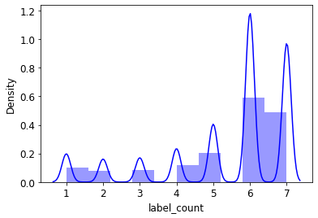
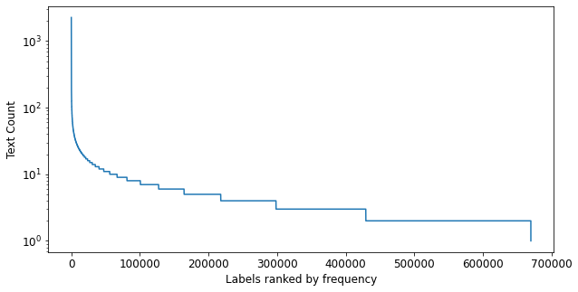
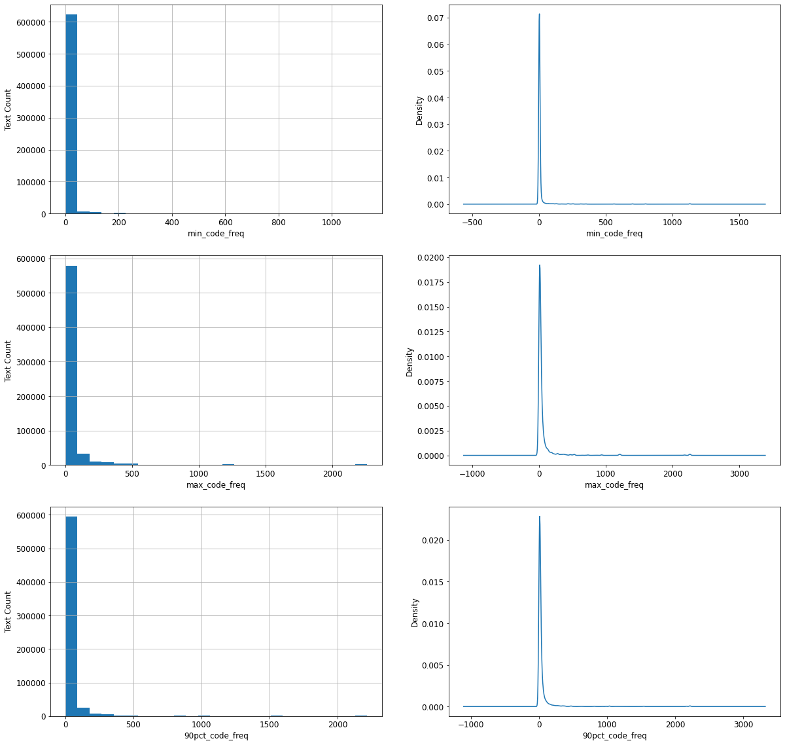
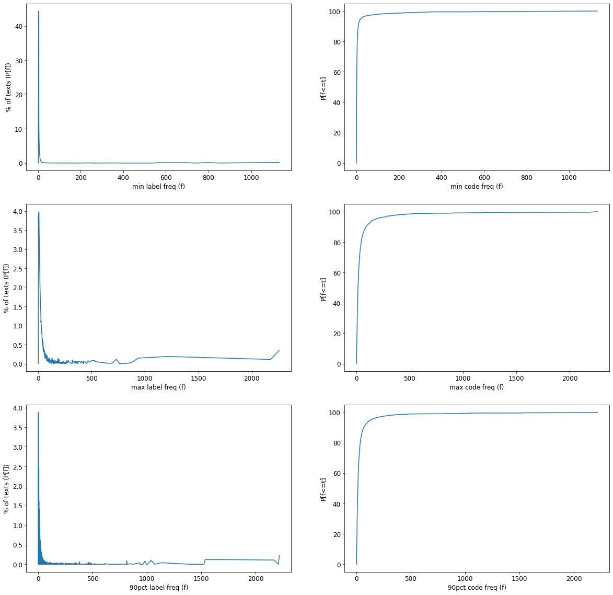
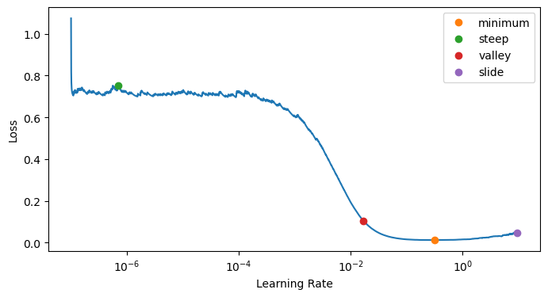
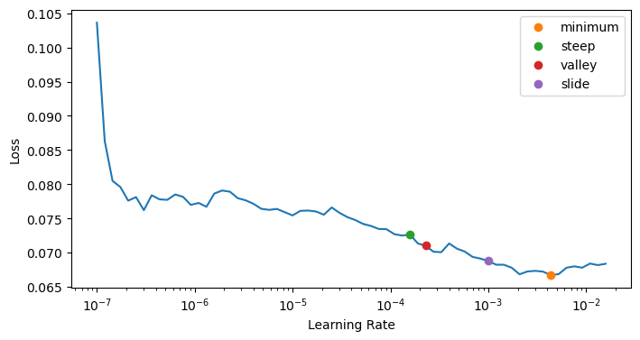
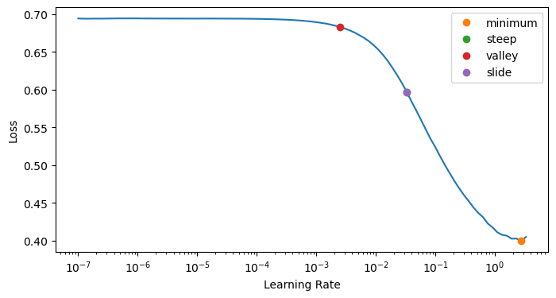
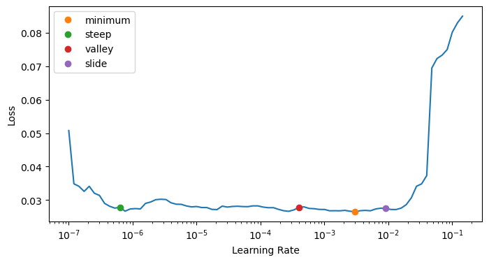
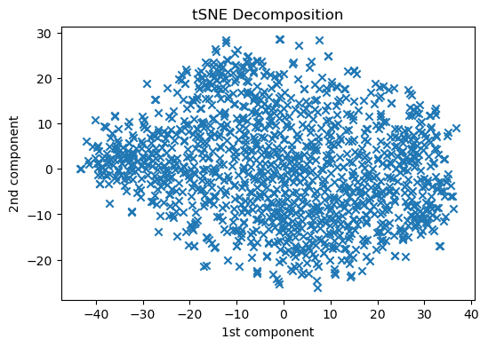
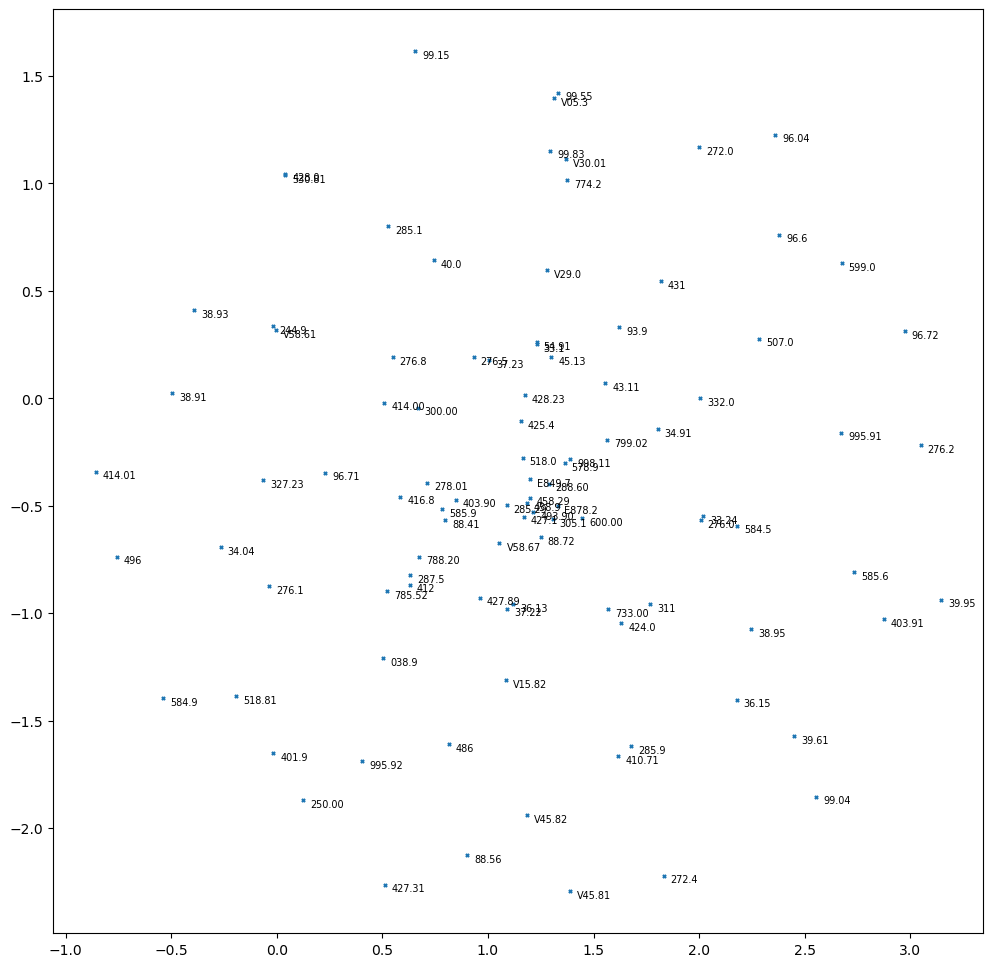

! [ -e /content ] && pip install -Uqq xcube # upgrade xcube on colabTraining an XML Text Classifier
from fastai.text.all import *
from xcube.text.all import *
from fastai.metrics import accuracy # there's an 'accuracy' metric in xcube as well (Deb fix name conflict later)Make sure we have that “beast”:
ic(torch.cuda.get_device_name(default_device()));
test_eq(torch.cuda.get_device_name(0), torch.cuda.get_device_name(default_device()))
test_eq(default_device(), torch.device(0))
print(f"GPU memory = {torch.cuda.get_device_properties(default_device()).total_memory/1024**3}GB")ic| torch.cuda.get_device_name(default_device()): 'Quadro RTX 8000'GPU memory = 44.99969482421875GBsource = untar_xxx(XURLs.MIMIC3)
source_l2r = untar_xxx(XURLs.MIMIC3_L2R)Setting some environment variables:
os.environ['CUDA_LAUNCH_BLOCKING'] = "1"Setting defaults for pandas and matplotlib:
# Set the default figure size
plt.rcParams["figure.figsize"] = (8, 4)Altering some default jupyter settings:
from IPython.core.interactiveshell import InteractiveShell
# InteractiveShell.ast_node_interactivity = "last" # "all"DataLoaders for the Language Model
To be able to use Transfer Learning, first we need to fine-tune our Language Model (which we pretrained on Wikipedia) on the corpus of Wiki-500k (the one we downloaded). Here we will build the DataLoaders object using fastai’s DataBlock API:
data = source/'mimic3-9k.csv'
!head -n 1 {data}subject_id,hadm_id,text,labels,length,is_validdf = pd.read_csv(data,
header=0,
names=['subject_id', 'hadm_id', 'text', 'labels', 'length', 'is_valid'],
dtype={'subject_id': str, 'hadm_id': str, 'text': str, 'labels': str, 'length': np.int64, 'is_valid': bool})
len(df)52726df[['text', 'labels']] = df[['text', 'labels']].astype(str)Let’s take a look at the data:
df.head(3)| subject_id | hadm_id | text | labels | length | is_valid | |
|---|---|---|---|---|---|---|
| 0 | 86006 | 111912 | admission date discharge date date of birth sex f service surgery allergies patient recorded as having no known allergies to drugs attending first name3 lf chief complaint 60f on coumadin was found slightly drowsy tonight then fell down stairs paramedic found her unconscious and she was intubated w o any medication head ct shows multiple iph transferred to hospital1 for further eval major surgical or invasive procedure none past medical history her medical history is significant for hypertension osteoarthritis involving bilateral knee joints with a dependence on cane for ambulation chronic... | 801.35;348.4;805.06;807.01;998.30;707.24;E880.9;427.31;414.01;401.9;V58.61;V43.64;707.00;E878.1;96.71 | 230 | False |
| 1 | 85950 | 189769 | admission date discharge date service neurosurgery allergies sulfa sulfonamides attending first name3 lf chief complaint cc cc contact info major surgical or invasive procedure none history of present illness hpi 88m who lives with family had fall yesterday today had decline in mental status ems called pt was unresponsive on arrival went to osh head ct showed large r sdh pt was intubated at osh and transferred to hospital1 for further care past medical history cad s p mi in s p cabg in ventricular aneurysm at that time cath in with occluded rca unable to intervene chf reported ef 1st degre... | 852.25;E888.9;403.90;585.9;250.00;414.00;V45.81;96.71 | 304 | False |
| 2 | 88025 | 180431 | admission date discharge date date of birth sex f service surgery allergies no known allergies adverse drug reactions attending first name3 lf chief complaint s p fall major surgical or invasive procedure none history of present illness 45f etoh s p fall from window at feet found ambulating and slurring speech on scene intubated en route for declining mental status in the er the patient was found to be bradycardic to the s with bp of systolic she was given atropine dilantin and was started on saline past medical history unknown social history unknown family history unknown physical exam ex... | 518.81;348.4;348.82;801.25;427.89;E882;V49.86;305.00;96.71;38.93 | 359 | False |
We will now create the DataLoaders using DataBlock API:
dls_lm = DataBlock(
blocks = TextBlock.from_df('text', is_lm=True),
get_x = ColReader('text'),
splitter = RandomSplitter(0.1)
).dataloaders(df, bs=384, seq_len=80)For the backward LM:
dls_lm_r = DataBlock(
blocks = TextBlock.from_df('text', is_lm=True, backwards=True),
get_x = ColReader('text'),
splitter = RandomSplitter(0.1)
).dataloaders(df, bs=384, seq_len=80)Let’s take a look at the batches:
dls_lm.show_batch(max_n=2)| text | text_ | |
|---|---|---|
| 0 | xxbos admission date discharge date date of birth sex m history of present illness first name8 namepattern2 known lastname is the firstborn of triplets at week gestation born to a year old gravida para woman immune rpr non reactive hepatitis b surface antigen negative group beta strep status unknown this was an intrauterine insemination achieved pregnancy the pregnancy was uncomplicated until when mother was admitted for evaluation of pregnancy induced hypertension she was treated with betamethasone and discharged home she | admission date discharge date date of birth sex m history of present illness first name8 namepattern2 known lastname is the firstborn of triplets at week gestation born to a year old gravida para woman immune rpr non reactive hepatitis b surface antigen negative group beta strep status unknown this was an intrauterine insemination achieved pregnancy the pregnancy was uncomplicated until when mother was admitted for evaluation of pregnancy induced hypertension she was treated with betamethasone and discharged home she was |
| 1 | occluded rca with l to r collaterals the femoral sheath was sewn in started on heparin and transferred to hospital1 for surgical revascularization past medical history coronary artery diease s p myocardial infarction s p pci to rca subarachnoid hemorrhage secondary to streptokinase hypertension hyperlipidemia hiatal hernia gastritis depression reactive airway disease s p ppm placement for 2nd degree av block social history history of smoking having quit in with a pack year history family history strong family history of | rca with l to r collaterals the femoral sheath was sewn in started on heparin and transferred to hospital1 for surgical revascularization past medical history coronary artery diease s p myocardial infarction s p pci to rca subarachnoid hemorrhage secondary to streptokinase hypertension hyperlipidemia hiatal hernia gastritis depression reactive airway disease s p ppm placement for 2nd degree av block social history history of smoking having quit in with a pack year history family history strong family history of premature |
dls_lm_r.show_batch(max_n=2)| text | text_ | |
|---|---|---|
| 0 | sb west d i basement name first doctor bldg name ward hospital lm lf name3 first lf name last name last doctor d i 30a visit fellow sb west d i name first doctor name last doctor d i 30p visit attending opat appointments up follow disease infectious garage name ward hospital parking best east campus un location ctr clinical name ward hospital sc building fax telephone md namepattern4 name last pattern1 name name11 first with am at wednesday when | west d i basement name first doctor bldg name ward hospital lm lf name3 first lf name last name last doctor d i 30a visit fellow sb west d i name first doctor name last doctor d i 30p visit attending opat appointments up follow disease infectious garage name ward hospital parking best east campus un location ctr clinical name ward hospital sc building fax telephone md namepattern4 name last pattern1 name name11 first with am at wednesday when services |
| 1 | bare and catheterization cardiac a for hospital1 to flown were you infarction myocardial or attack heart a and pain chest had you instructions discharge independent ambulatory status activity interactive and alert consciousness of level coherent and clear status mental condition discharge hyperglycemia hyperlipidemia hypertension infarction myocardial inferior acute diagnosis discharge home disposition discharge refills tablets disp pain chest for needed as year month of total a for minutes every sublingual tablet one sig sublingual tablet mg nitroglycerin day a once | and catheterization cardiac a for hospital1 to flown were you infarction myocardial or attack heart a and pain chest had you instructions discharge independent ambulatory status activity interactive and alert consciousness of level coherent and clear status mental condition discharge hyperglycemia hyperlipidemia hypertension infarction myocardial inferior acute diagnosis discharge home disposition discharge refills tablets disp pain chest for needed as year month of total a for minutes every sublingual tablet one sig sublingual tablet mg nitroglycerin day a once po |
The length of our vocabulary is:
len(dls_lm.vocab)57376Let’s take a look at some words of the vocab:
print(coll_repr(L(dls_lm.vocab), 30))(#57376) ['xxunk','xxpad','xxbos','xxeos','xxfld','xxrep','xxwrep','xxup','xxmaj','the','and','to','of','was','with','a','on','in','for','mg','no','tablet','patient','is','he','at','blood','name','po','she'...]Creating the DataLaoders takes some time, so smash that save button (also a good idea to save the dls_lm.vocab for later use) if you are working on your own dataset. In this case though untar_xxx has got it for you:
print("\n".join(L(source.glob("**/*dls*lm*.pkl")).map(str))) # the ones with _r are for the reverse language model/home/deb/.xcube/data/mimic3/mimic3-9k_dls_lm.pkl
/home/deb/.xcube/data/mimic3/mimic3-9k_dls_lm_vocab_r.pkl
/home/deb/.xcube/data/mimic3/mimic3-9k_dls_lm_vocab.pkl
/home/deb/.xcube/data/mimic3/mimic3-9k_dls_lm_r.pkl
/home/deb/.xcube/data/mimic3/mimic3-9k_dls_lm_old.pklTo load back the dls_lm later on:
dls_lm = torch.load(source/'mimic3-9k_dls_lm.pkl')dls_lm_r = torch.load(source/'mimic3-9k_dls_lm_r.pkl')Learner for the Language Model Fine-Tuning:
learn = language_model_learner(
dls_lm, AWD_LSTM, drop_mult=0.3,
metrics=[accuracy, Perplexity()]).to_fp16()And, one more for the reverse:
learn_r = language_model_learner(
dls_lm_r, AWD_LSTM, drop_mult=0.3, backwards=True,
metrics=[accuracy, Perplexity()]).to_fp16()Training a language model on the full datset takes a lot of time. So you can train one on a tiny dataset for illustration. Or you can skip the training and just load up the one that’s pretrained and downloaded by untar_xxx and just do the validation.
Let’s compute the learning rate using the lr_find:
lr_min, lr_steep, lr_valley, lr_slide = learn.lr_find(suggest_funcs=(minimum, steep, valley, slide))
lr_min, lr_steep, lr_valley, lr_slidelearn.fit_one_cycle(1, lr_min)| epoch | train_loss | valid_loss | accuracy | perplexity | time |
|---|---|---|---|---|---|
| 0 | 3.646323 | 3.512013 | 0.382642 | 33.515659 | 2:27:57 |
It takes quite a while to train each epoch, so we’ll be saving the intermediate model results during the training process:
Since we have completed the initial training, we will now continue fine-tuning the model after unfreezing:
learn.unfreeze()and run lr_find again, because we now have more layers to train, and the last layers weight have already been trained for one epoch:
lr_min, lr_steep, lr_valley, lr_slide = learn.lr_find(suggest_funcs=(minimum, steep, valley, slide))
lr_min, lr_steep, lr_valley, lr_slideLet’s now traing with a suitable learning rate:
learn.fit_one_cycle(10, lr_max=2e-3, cbs=SaveModelCallback(fname='lm'))Note: Make sure if you have trained the most recent language model Learner for more epochs (then you need to save that version)
Here you can load the pretrained language model which untar_xxx downloaded:
learn = learn.load(source/'mimic3-9k_lm')learn_r = learn_r.load(source/'mimic3-9k_lm_r')Let’s validate the Learner to make sure we loaded the correct version:
learn.validate()(#3) [2.060459852218628,0.5676611661911011,7.849578857421875]and the reverse…
learn_r.validate()(#3) [2.101907968521118,0.5691556334495544,8.18176555633545]Saving the encoder of the Language Model
Crucial: Once we have trained our LM we will save all of our model except the final layer that converts activation to probabilities of picking each token in our vocabulary. The model not including the final layer has a sexy name - encoder. We will save it using save_encoder method of the Learner:
# learn.save_encoder('lm_finetuned')
# learn_r.save_encoder('lm_finetuned_r')Saving the decoder of the Language Model
learn.save_decoder('mimic3-9k_lm_decoder')
learn_r.save_decoder('mimic3-9k_lm_decoder_r')This completes the second stage of the text classification process - fine-tuning the Language Model pretrained on Wikipedia corpus. We will now use it to fine-tune a text multi-label text classifier.
DataLoaders for the Multi-Label Classifier (using fastai’s Mid-Level Data API)
Fastai’s midlevel data api is the swiss army knife of data preprocessing. Detailed tutorials can be found here intermediate, advanced. We will use it here to create our dataloaders for the classifier.
Loading Raw Data
data = source/'mimic3-9k.csv'
!head -n 1 {data}subject_id,hadm_id,text,labels,length,is_valid# !shuf -n 200000 {data} > {data_sample}df = pd.read_csv(data,
header=0,
names=['subject_id', 'hadm_id', 'text', 'labels', 'length', 'is_valid'],
dtype={'subject_id': str, 'hadm_id': str, 'text': str, 'labels': str, 'length': np.int64, 'is_valid': bool})df[['text', 'labels']] = df[['text', 'labels']].astype(str)df.head(3)| subject_id | hadm_id | text | labels | length | is_valid | |
|---|---|---|---|---|---|---|
| 0 | 86006 | 111912 | admission date discharge date date of birth sex f service surgery allergies patient recorded as having no known allergies to drugs attending first name3 lf chief complaint 60f on coumadin was found slightly drowsy tonight then fell down stairs paramedic found her unconscious and she was intubated w o any medication head ct shows multiple iph transferred to hospital1 for further eval major surgical or invasive procedure none past medical history her medical history is significant for hypertension osteoarthritis involving bilateral knee joints with a dependence on cane for ambulation chronic... | 801.35;348.4;805.06;807.01;998.30;707.24;E880.9;427.31;414.01;401.9;V58.61;V43.64;707.00;E878.1;96.71 | 230 | False |
| 1 | 85950 | 189769 | admission date discharge date service neurosurgery allergies sulfa sulfonamides attending first name3 lf chief complaint cc cc contact info major surgical or invasive procedure none history of present illness hpi 88m who lives with family had fall yesterday today had decline in mental status ems called pt was unresponsive on arrival went to osh head ct showed large r sdh pt was intubated at osh and transferred to hospital1 for further care past medical history cad s p mi in s p cabg in ventricular aneurysm at that time cath in with occluded rca unable to intervene chf reported ef 1st degre... | 852.25;E888.9;403.90;585.9;250.00;414.00;V45.81;96.71 | 304 | False |
| 2 | 88025 | 180431 | admission date discharge date date of birth sex f service surgery allergies no known allergies adverse drug reactions attending first name3 lf chief complaint s p fall major surgical or invasive procedure none history of present illness 45f etoh s p fall from window at feet found ambulating and slurring speech on scene intubated en route for declining mental status in the er the patient was found to be bradycardic to the s with bp of systolic she was given atropine dilantin and was started on saline past medical history unknown social history unknown family history unknown physical exam ex... | 518.81;348.4;348.82;801.25;427.89;E882;V49.86;305.00;96.71;38.93 | 359 | False |
Sample a small fraction of the dataset to ensure quick iteration (Skip this if you want to do this on the full dataset)
# df = df.sample(frac=0.3, random_state=89, ignore_index=True)
# df = df.sample(frac=0.025, random_state=89, ignore_index=True)
df = df.sample(frac=0.005, random_state=89, ignore_index=True)
len(df)264Let’s now gather the labels from the ‘labels’ columns of the df:
lbl_freqs = Counter()
for labels in df.labels: lbl_freqs.update(labels.split(';'))The total number of labels are:
len(lbl_freqs)8922Let’s take a look at the most common labels:
pd.DataFrame(lbl_freqs.most_common(20), columns=['label', 'frequency'])| label | frequency | |
|---|---|---|
| 0 | 401.9 | 20053 |
| 1 | 38.93 | 14444 |
| 2 | 428.0 | 12842 |
| 3 | 427.31 | 12594 |
| 4 | 414.01 | 12179 |
| 5 | 96.04 | 9932 |
| 6 | 96.6 | 9161 |
| 7 | 584.9 | 8907 |
| 8 | 250.00 | 8784 |
| 9 | 96.71 | 8619 |
| 10 | 272.4 | 8504 |
| 11 | 518.81 | 7249 |
| 12 | 99.04 | 7147 |
| 13 | 39.61 | 6809 |
| 14 | 599.0 | 6442 |
| 15 | 530.81 | 6156 |
| 16 | 96.72 | 5926 |
| 17 | 272.0 | 5766 |
| 18 | 285.9 | 5296 |
| 19 | 88.56 | 5240 |
Let’s make a list of all labels (We will use it later while creating the DataLoader)
lbls = list(lbl_freqs.keys())Dataset Statistics (Optional)
Let’s try to understand what captures the hardness of an xml dataset
Check #1: Number of instances (train/valid split)
train, valid = df.index[~df['is_valid']], df.index[df['is_valid']]
len(train), len(valid)(244, 20)Check #2: Avg number of instances per label
array(list(lbl_freqs.values())).mean()3.341463414634146Check #3: Plotting the label distribution
lbl_count = []
for lbls in df.labels: lbl_count.append(len(lbls.split(',')))df_copy = df.copy()
df_copy['label_count'] = lbl_countdf_copy.head(2)| text | labels | is_valid | label_count | |
|---|---|---|---|---|
| 0 | Methodical Bible study: A new approach to hermeneutics /SEP/ Methodical Bible study: A new approach to hermeneutics. Inductive study compares related Bible texts in order to let the Bible interpret itself, rather than approaching Scripture with predetermined notions of what it will say. Dr. Trainas Methodical Bible Study was not intended to be the last word in inductive Bible study; but since its first publication in 1952, it has become a foundational text in this field. Christian colleges and seminaries have made it required reading for beginning Bible students, while many churches have... | 34141,119299,126600,128716,187372,218742 | False | 6 |
| 1 | Southeastern Mills Roast Beef Gravy Mix, 4.5-Ounce Packages (Pack of 24) /SEP/ Southeastern Mills Roast Beef Gravy Mix, 4.5-Ounce Packages (Pack of 24). Makes 3-1/2 cups. Down home taste. Makes hearty beef stew base. | 465536,465553,615429 | False | 3 |
The average number of labels per instance is:
df_copy.label_count.mean()5.385563363865518import seaborn as sns
sns.distplot(df_copy.label_count, bins=10, color='b');/home/deb/miniconda3/lib/python3.9/site-packages/seaborn/distributions.py:2619: FutureWarning: `distplot` is a deprecated function and will be removed in a future version. Please adapt your code to use either `displot` (a figure-level function with similar flexibility) or `histplot` (an axes-level function for histograms).
warnings.warn(msg, FutureWarning)
lbls_sorted = sorted(lbl_freqs.items(), key=lambda item: item[1], reverse=True)lbls_sorted[:20][('455619', 2258),
('455662', 2176),
('547041', 2160),
('516790', 1214),
('455712', 1203),
('455620', 1133),
('632786', 1132),
('632789', 1132),
('632785', 1030),
('632788', 1030),
('492255', 938),
('455014', 872),
('670034', 850),
('427871', 815),
('599701', 803),
('308331', 801),
('581325', 801),
('649272', 799),
('455704', 762),
('666760', 733)]ranked_lbls = L(lbls_sorted).itemgot(0)
ranked_freqs = L(lbls_sorted).itemgot(1)
ranked_lbls, ranked_freqs((#670091) ['455619','455662','547041','516790','455712','455620','632786','632789','632785','632788'...],
(#670091) [2258,2176,2160,1214,1203,1133,1132,1132,1030,1030...])fig = plt.figure(figsize=(10,5))
ax = fig.add_subplot(1,1,1)
ax.plot(ranked_freqs)
ax.set_xlabel('Labels ranked by frequency')
ax.set_ylabel('Text Count')
ax.set_yscale('log');
Check #4: Computing the min label freq for each text
df_copy.head(10)| text | labels | is_valid | label_count | min_code_freq | max_code_freq | 90pct_code_freq | |
|---|---|---|---|---|---|---|---|
| 0 | Methodical Bible study: A new approach to hermeneutics /SEP/ Methodical Bible study: A new approach to hermeneutics. Inductive study compares related Bible texts in order to let the Bible interpret itself, rather than approaching Scripture with predetermined notions of what it will say. Dr. Trainas Methodical Bible Study was not intended to be the last word in inductive Bible study; but since its first publication in 1952, it has become a foundational text in this field. Christian colleges and seminaries have made it required reading for beginning Bible students, while many churches have... | 34141,119299,126600,128716,187372,218742 | False | 6 | 2 | 29 | 25.5 |
| 1 | Southeastern Mills Roast Beef Gravy Mix, 4.5-Ounce Packages (Pack of 24) /SEP/ Southeastern Mills Roast Beef Gravy Mix, 4.5-Ounce Packages (Pack of 24). Makes 3-1/2 cups. Down home taste. Makes hearty beef stew base. | 465536,465553,615429 | False | 3 | 2 | 3 | 3.0 |
| 2 | MMF Industries 24-Key Portable Zippered Key Case (201502417) /SEP/ MMF Industries 24-Key Portable Zippered Key Case (201502417). The MMF Industries 201502417 24-Key Portable Zippered Key Case is an attractive burgundy-colored leather-like vinyl case with brass corners and looks like a portfolio. Its easy-slide zipper keeps keys enclosed, and a hook-and-loop fastener strips keep keys securely in place. Key tags are included.\tZippered key case offers a portable alternative to metal wall key cabinets. Included key tags are backed by hook-and-loop closures. Easy slide zipper keeps keys enclos... | 393828 | False | 1 | 2 | 2 | 2.0 |
| 3 | Hoover the Fishing President /SEP/ Hoover the Fishing President. Hal Elliott Wert has spent years researching Herbert Hoover, Franklin Roosevelt, and Harry Truman. He holds a Ph.D. from the University of Kansas and currently teaches at the Kansas City Art Institute. | 167614,223686 | False | 2 | 4 | 4 | 4.0 |
| 4 | GeoPuzzle U.S.A. and Canada - Educational Geography Jigsaw Puzzle (69 pcs) /SEP/ GeoPuzzle U.S.A. and Canada - Educational Geography Jigsaw Puzzle (69 pcs). GeoPuzzles are jigsaw puzzles that make learning world geography fun. The pieces of a GeoPuzzle are shaped like individual countries, so children learn as they put the puzzle together. Award-winning Geopuzzles help to build fine motor, cognitive, language, and problem-solving skills, and are a great introduction to world geography for children 4 and up. Designed by an art professor, jumbo sized and brightly colored GeoPuzzles are avail... | 480528,480530,480532,485144,485146,598793 | False | 6 | 5 | 10 | 8.5 |
| 5 | Amazon.com: Paul Fredrick Men's Cotton Pinpoint Oxford Straight Collar Dress Shirt: Clothing /SEP/ Amazon.com: Paul Fredrick Men's Cotton Pinpoint Oxford Straight Collar Dress Shirt: Clothing. Pinpoint Oxford Cotton. Traditional Straight Collar, 1/4 Topstitched. Button Cuffs, 1/4 Topstitched. Embedded Collar Stay. Regular, Big and Tall. Top Center Placket. Split Yoke. Single Front Rounded Pocket. Machine Wash Or Dry Clean. Imported. * Big and Tall Sizes - addl $5.00 | 516790,567615,670034 | False | 3 | 256 | 1214 | 1141.2 |
| 6 | Darkest Fear : A Myron Bolitar Novel /SEP/ Darkest Fear : A Myron Bolitar Novel. Myron Bolitar's father's recent heart attack brings Myron smack into a midlife encounter with issues of adulthood and mortality. And if that's not enough to turn his life upside down, the reappearance of his first serious girlfriend is. The basketball star turned sports agent, who does a little detecting when business is slow, is saddened by the news that Emily Downing's 13-year-old son is dying and desperately needs a bone marrow transplant; even if she did leave him for the man who destroyed his basketball c... | 50442,50516,50647,50672,50680,662538 | False | 6 | 2 | 3 | 2.5 |
| 7 | In Debt We Trust (2007) /SEP/ In Debt We Trust (2007). Just a few decades ago, owing more money than you had in your bank account was the exception, not the rule. Yet, in the last 10 years, consumer debt has doubled and, for the first time, Americans are spending more than they're saving -- or making. This April, award-winning former ABC News and CNN producer Danny Schechter investigates America's mounting debt crisis in his latest hard-hitting expose, IN DEBT WE TRUST. While many Americans are "maxing out" on credit cards, there is a much deeper story: power is shifting into few... | 493095,499382,560691,589867,591343,611615,619231 | False | 7 | 4 | 50 | 47.0 |
| 8 | Craftsman 9-34740 32 Piece 1/4-3/8 Drive Standard/Metric Socket Wrench Set /SEP/ Craftsman 9-34740 32 Piece 1/4-3/8 Drive Standard/Metric Socket Wrench Set. Craftsman 9-34740 32 Pc. 1/4-3/8 Drive Standard/Metric Socket Wrench Set. The Craftsman 9-34740 32 Pc. 1/4-3/8 Drive Standard/Metric Socket Wrench Set includes 1/4 Inch Drive Sockets; 8 Six-Point Standard Sockets:9-43492 7/32-Inch, 9-43496 11/32,9-43493 1/4-Inch, 9-43497 3/8-Inch, 9-43494 9/32-Inch, 9-43498 7/16-Inch,9-43495 5/16-Inch, 9-43499 1/2-Inch; 7 Six-Point Metric Sockets:9-43505 4mm, 9-43504 8mm, 9-43501 5mm, 9-43507 9mm,9-435... | 590298,609038 | False | 2 | 2 | 2 | 2.0 |
| 9 | 2013 Hammer Nutrition Complex Carbohydrate Energy Gel - 12-Pack /SEP/ 2013 Hammer Nutrition Complex Carbohydrate Energy Gel - 12-Pack. Hammer Nutrition made the Complex Carbohydrate Energy Gel with natural ingredients and real fruit, so you won't have those unhealthy insulin-spike sugar highs. Instead, you get prolonged energy levels from the complex carbohydrates and amino acids in this Hammer Gel. The syrup-like consistency makes it easy to drink straight or add to your water. Unlike nutrition bars that freeze on your winter treks or melt during hot adventure races, the Complex Carbohydr... | 453268,453277,510450,516828,520780,542684,634756 | False | 7 | 3 | 11 | 9.2 |
df_copy['min_code_freq'] = df_copy.apply(
lambda row: min([lbl_freqs[lbl] for lbl in row.labels.split(',')]), axis=1)df_copy['max_code_freq'] = df_copy.apply(
lambda row: max([lbl_freqs[lbl] for lbl in row.labels.split(',')]), axis=1)df_copy['90pct_code_freq'] = df_copy.apply(
lambda row: np.percentile([lbl_freqs[lbl] for lbl in row.labels.split(',')], 90), axis=1)fig, axes = plt.subplots(nrows=3, ncols=2, figsize=(20,20))
for freq, axis in zip(['min_code_freq', 'max_code_freq', '90pct_code_freq'], axes):
df_copy[freq].hist(ax=axis[0], bins=25)
axis[0].set_xlabel(freq)
axis[0].set_ylabel('Text Count')
df_copy[freq].plot.density(ax=axis[1])
axis[1].set_xlabel(freq)
min_code_freqs = Counter(df_copy['min_code_freq'])
max_code_freqs = Counter(df_copy['max_code_freq'])
nintypct_code_freqs = Counter(df_copy['90pct_code_freq'])total_notes = L(min_code_freqs.values()).sum()
total_notes643474for kmin in min_code_freqs:
min_code_freqs[kmin] = (min_code_freqs[kmin]/total_notes) * 100
for kmax in max_code_freqs:
max_code_freqs[kmax] = (max_code_freqs[kmax]/total_notes) * 100
for k90pct in nintypct_code_freqs:
nintypct_code_freqs[k90pct] = (nintypct_code_freqs[k90pct]/total_notes) * 100min_code_freqs = dict(sorted(min_code_freqs.items(), key=lambda item: item[0]))
max_code_freqs = dict(sorted(max_code_freqs.items(), key=lambda item: item[0]))
nintypct_code_freqs = dict(sorted(nintypct_code_freqs.items(), key=lambda item: item[0]))fig, axes = plt.subplots(nrows=3, ncols=2, figsize=(20,20))
for axis, freq_dict, label in zip(axes, (min_code_freqs, max_code_freqs, nintypct_code_freqs), ('min', 'max', '90pct')):
axis[0].plot(freq_dict.keys(), freq_dict.values())
axis[0].set_xlabel(f"{label} label freq (f)")
axis[0].set_ylabel("% of texts (P[f])");
axis[1].plot(freq_dict.keys(), np.cumsum(list(freq_dict.values())))
axis[1].set_xlabel(f"{label} code freq (f)")
axis[1].set_ylabel("P[f<=t]");
Steps for creating the classifier DataLoaders using fastai’s Transforms:
1. train/valid splitter:
Okay, based on the is_valid column of our Dataframe, let’s create a splitter:
def splitter(df):
train = df.index[~df['is_valid']].tolist()
valid = df.index[df['is_valid']].to_list()
return train, validLet’s check the train/valid split
splits = [train, valid] = splitter(df)
L(splits[0]), L(splits[1])((#49354) [0,1,2,3,4,5,6,7,8,9...],
(#3372) [1631,1632,1633,1634,1635,1636,1637,1638,1639,1640...])2. Making the Datasets object:
Crucial: We need the vocab of the language model so that we can make sure we use the same correspondence of token to index. Otherwise, the embeddings we learned in our fine-tuned language model won’t make any sense to our classifier model, and the fine-tuning won’t be of any use. So we need to pass the lm_vocab to the Numericalize transform:
So let’s load the vocab of the language model:
lm_vocab = torch.load(source/'mimic3-9k_dls_lm_vocab.pkl')
lm_vocab_r = torch.load(source/'mimic3-9k_dls_lm_vocab_r.pkl')all_equal(lm_vocab, lm_vocab_r)
L(lm_vocab)(#57376) ['xxunk','xxpad','xxbos','xxeos','xxfld','xxrep','xxwrep','xxup','xxmaj','the'...]x_tfms = [Tokenizer.from_df('text'), attrgetter("text"), Numericalize(vocab=lm_vocab)]
x_tfms_r = [Tokenizer.from_df('text', ), attrgetter("text"), Numericalize(vocab=lm_vocab), reverse_text]
y_tfms = [ColReader('labels', label_delim=';'), MultiCategorize(vocab=lbls), OneHotEncode()]
tfms = [x_tfms, y_tfms]
tfms_r = [x_tfms_r, y_tfms]dsets = Datasets(df, tfms, splits=splits)CPU times: user 17.9 s, sys: 3.27 s, total: 21.2 s
Wall time: 2min 38sdsets_r = Datasets(df, tfms_r, splits=splits)CPU times: user 18.2 s, sys: 4.67 s, total: 22.9 s
Wall time: 2min 54sLet’s now check if our Datasets got created alright:
len(dsets.train), len(dsets.valid)(49354, 3372)Let’s check a random data point:
idx = random.randint(0, len(dsets))
x = dsets.train[idx]
assert isinstance(x, tuple) # tuple if independent and dependent variable
x_r = dsets_r.train[idx]dsets.decode(x)('xxbos admission date discharge date date of birth sex f service medicine allergies nsaids aspirin influenza virus vaccine attending first name3 lf chief complaint hypotension resp distress major surgical or invasive procedure rij placement and removal last name un gastric tube placement and removal rectal tube placement and removal picc line placement and removal history of present illness ms known lastname is a 50f with cirrhosis of unproven etiology h o perforated duodenal ulcer who has had weakness and back pain with cough and shortness of breath for days she has chronic low back pain but this is in a different location she also reports fever and chills she reports increasing weakness and fatigue over the same amount of time she is followed by vna who saw her at home and secondary to hypotension and hypoxia requested she go to ed in the ed initial vs were afebrile and o2 sat unable to be read ct of torso showed pneumonia but no abdominal pathology she was seen by surgery she was found to be significantly hypoxic and started on nrb a right ij was placed she was started on levophed after a drop in her pressures in the micu she is conversant and able to tell her story past medical history asthma does not use inhalers htn off meds for several years rheumatoid arthritis seronegative chronic severe back pain s p c sections history of secondary syphilis treated polysubstance abuse notably cocaine but no drug or alcohol use for at least past months depression pulmonary hypertension severe on cardiac cath restrictive lung disease seizures in childhood cirrhosis by liver biopsy etiology as yet unknown duodenal ulcer s p surgical repair xxunk location un in summer social history lives with boyfriend who helps in her healthcare has children past h o cocaine abuse but not current denies any etoh drug or tobacco use since cirrhosis diagnosis in month only previously smoked up to pack per wk family history noncontributory physical exam on admission t hr bp r o2 sat on nrb general alert oriented moderate respiratory distress heent sclera anicteric drymm oropharynx clear neck supple jvp not elevated no lad lungs rhonchi and crackles in bases xxrep 3 l with egophany increased xxunk cv tachy rate and rhythm normal s1 s2 no murmurs rubs gallops abdomen soft diffusely tender non distended bowel sounds present healing midline ex lap wound dehiscence on caudal end but without erythema drainage ext warm well perfused pulses no clubbing cyanosis or edema pertinent results admission labs 13pm blood wbc rbc hgb hct mcv mch mchc rdw plt ct 13pm blood neuts bands lymphs monos eos baso 13pm blood pt ptt inr pt 13pm blood plt smr high plt ct 13pm blood glucose urean creat na k cl hco3 angap 13pm blood alt ast ld ldh alkphos amylase totbili 22am blood ck mb ctropnt 42pm blood probnp numeric identifier 13pm blood albumin calcium phos mg 22am blood cortsol 28pm blood type art o2 flow po2 pco2 ph caltco2 base xs intubat not intuba vent spontaneou comment non rebrea 20pm blood lactate discharge labs 58am blood wbc rbc hgb hct mcv mch mchc rdw plt ct 58am blood plt ct 58am blood pt ptt inr pt 58am blood glucose urean creat na k cl hco3 angap 58am blood alt ast ld ldh alkphos totbili 58am blood calcium phos mg imaging ct chest abd pelvis impression no etiology for abdominal pain identified no free air is noted within the abdomen interval increase in diffuse anasarca and bilateral pleural effusions small on the right and small to moderate on the left compressive atelectasis and new bilateral lower lobe pneumonias interval improvement in the degree of mediastinal lymphadenopathy interval development of small pericardial effusion no ct findings to suggest tamponade tte the left atrium is normal in size there is mild symmetric left ventricular hypertrophy with normal cavity size and regional global systolic function lvef the estimated cardiac index is borderline low 5l min m2 tissue doppler imaging suggests a normal left ventricular filling pressure pcwp 12mmhg the right ventricular free wall is hypertrophied the right ventricular cavity is markedly dilated with severe global free wall hypokinesis there is abnormal septal motion position consistent with right ventricular pressure volume overload the aortic valve leaflets appear structurally normal with good leaflet excursion and no aortic regurgitation the mitral valve leaflets are structurally normal mild mitral regurgitation is seen the tricuspid valve leaflets are mildly thickened there is mild moderate tricuspid xxunk there is severe pulmonary artery systolic hypertension there is a small circumferential pericardial effusion without echocardiographic signs of tamponade compared with the prior study images reviewed of the overall findings are similar ct abd pelvis impression anasarca increased bilateral pleural effusions small to moderate right greater than left trace pericardial fluid increased left lower lobe collapse consolidation right basilar atelectasis has also increased new ascites no free air dilated fluid filled colon and rectum no wall thickening to suggest colitis no evidence of small bowel obstruction bilat upper extremities venous ultrasound impression non occlusive right subclavian deep vein thrombosis cta chest impression no pulmonary embolism to the subsegmental level anasarca moderate to large left and moderate right pleural effusion small pericardial effusion unchanged right ventricle and right atrium enlargement since enlarged main pulmonary artery could be due to pulmonary hypertension complete collapse of the left lower lobe pneumonia can not be ruled out right basilar atelectasis kub impression unchanged borderline distended colon no evidence of small bowel obstruction or ileus brief hospital course this is a 50f with severe pulmonary hypertension h o duodenal perf s p surgical repair cirrhosis of unknown etiology and h o polysubstance abuse who presented with septic shock secondary pneumonia with respiratory distress septic shock pneumonia fever hypotension tachycardia hypoxia leukocytosis with xxrep 3 l infiltrate initially pt was treated for both health care associated pneumonia and possible c diff infection given wbc on admission however c diff treatment was stopped after patient tested negative x3 she completed a day course of vancomycin zosyn on for pneumonia she did initially require non rebreather in the icu but for the last week prior to discharge she has had stable o2 sats to mid s on nasal cannula she did also require pressors for the first several days of this hospitalization but was successfully weaned off pressors approximately wk prior to discharge at the time of discharge she is maintaining stable bp s 100s 110s doppler due to repeated ivf boluses for hypotension during this admission the pt developed anasarca and at the time of discharge is being slowly diuresed with lasix iv daily ogilvies pseudo obstruction the pt experience abd pain and distention with radiologic evidence of dilated loops of small bowel and large bowel during this hospitalization there was never any evidence of a transition point of stricture both a rectal and ngt were placed for decompression the pts symptoms and abd exam improved during the days prior to discharge and at the time of discharge she is tolerating a regular po diet and having normal bowel movements chronic back pain the pt has a long h o chronic back pain she was treated with iv morphine here for acute on chronic back pain likely exacerbated by bed rest and ileus at discharge she was transitioned to po morphine cirrhosis the etiology of this is unknown but the pt has biopsy proven cirrhosis from liver biopsy this likely explains her baseline coagulopathy and hypoalbuminemia here she needs to have outpt f u with hepatology she has no known complications of cirrhosis at this time rue dvt the pt has a rue dvt seen on u s associated with rij cvl which was placed in house she was started on a heparin gtt which was transitioned to coumadin prior to discharge at discharge her inr is she should have follow up lab work on friday of note at discharge the pt had several healing boils on her inner upper thighs thought to be trauma from her foley rubbing against the skin no further treatment was thought to be neccessary for these medications on admission clobetasol cream apply to affected area twice a day as needed gabapentin neurontin mg tablet tablet s by mouth three times a day metoprolol tartrate mg tablet tablet s by mouth twice a day omeprazole mg capsule delayed release e c capsule delayed release e c s by mouth once a day oxycodone mg capsule capsule s by mouth q hours physical therapy dx first name9 namepattern2 location un evaluation and management of motor skills tramadol mg tablet tablet s by mouth twice a day as needed for pain trazodone mg tablet tablet s by mouth hs medications otc docusate sodium mg ml liquid teaspoon by mouth twice a day as needed magnesium oxide mg tablet tablet s by mouth twice a day discharge medications ipratropium bromide solution sig one nebulizer inhalation q6h every hours clobetasol ointment sig one appl topical hospital1 times a day lidocaine mg patch adhesive patch medicated sig one adhesive patch medicated topical qday as needed for back pain please wear on skin hrs then have hrs with patch off hemorrhoidal suppository suppository sig one suppository rectal once a day as needed for pain pantoprazole mg tablet delayed release e c sig one tablet delayed release e c po twice a day outpatient lab work please have you inr checked saturday the results should be sent to your doctor at rehab multivitamin tablet sig one tablet po once a day morphine mg ml solution sig mg po every four hours as needed for pain warfarin mg tablet sig one tablet po once daily at pm discharge disposition extended care facility hospital3 hospital discharge diagnosis healthcare associated pneumonia colonic pseudo obstruction severe pulmonary hypertension cirrhosis htn chronic back pain right upper extremity dvt discharge condition good o2 sat high s on 3l nc bp stable 100s 110s doppler patient tolerating regular diet and having bowel movements not ambulatory discharge instructions you were admitted with a pneumonia which required a stay in our icu but did not require intubation or the use of a breathing tube you did need medications for a low blood pressure for the first several days of your hospitalization while you were here you also had problems with your intestines that caused them to stop working and food to get stuck in your intestines we treated you for this and you are now able to eat and move your bowels you got a blood clot in your arm while you were here we started you on iv medication for this initially but have now transitioned you to oral anticoagulants your doctor will need to monitor the levels of this medication at rehab you will likely need to remain on this medication for months please follow up as below you need to see a hepatologist liver doctor within the next month to follow up on your diagnosis of cirrhosis your list of medications is attached please call your doctor or return to the hospital if you have fevers shortness of breath chest pain abdominal pain vomitting inability to tolerate food or liquids by mouth dizziness or any other concerning symptoms followup instructions primary care first name11 name pattern1 last name namepattern4 md phone telephone fax date time dermatology name6 md name8 md md phone telephone fax date time you need to have your blood drawn to monitor your inr or coumadin level next on saturday the doctor at the rehab with change your coumadin dose accordingly please follow up with a hepatologist liver doctor within month if you would like to make an appointment at our liver center at hospital1 the number is telephone fax please follow up with a pulmonologist about your severe pulmonary hypertension within month if you do not have a pulmonologist and would like to follow up at hospital1 the number is telephone fax completed by',
(#18) ['401.9','38.93','493.90','785.52','995.92','070.54','276.1','038.9','486','518.82'...])dsets.show(x)xxbos admission date discharge date date of birth sex f service medicine allergies nsaids aspirin influenza virus vaccine attending first name3 lf chief complaint hypotension resp distress major surgical or invasive procedure rij placement and removal last name un gastric tube placement and removal rectal tube placement and removal picc line placement and removal history of present illness ms known lastname is a 50f with cirrhosis of unproven etiology h o perforated duodenal ulcer who has had weakness and back pain with cough and shortness of breath for days she has chronic low back pain but this is in a different location she also reports fever and chills she reports increasing weakness and fatigue over the same amount of time she is followed by vna who saw her at home and secondary to hypotension and hypoxia requested she go to ed in the ed initial vs were afebrile and o2 sat unable to be read ct of torso showed pneumonia but no abdominal pathology she was seen by surgery she was found to be significantly hypoxic and started on nrb a right ij was placed she was started on levophed after a drop in her pressures in the micu she is conversant and able to tell her story past medical history asthma does not use inhalers htn off meds for several years rheumatoid arthritis seronegative chronic severe back pain s p c sections history of secondary syphilis treated polysubstance abuse notably cocaine but no drug or alcohol use for at least past months depression pulmonary hypertension severe on cardiac cath restrictive lung disease seizures in childhood cirrhosis by liver biopsy etiology as yet unknown duodenal ulcer s p surgical repair xxunk location un in summer social history lives with boyfriend who helps in her healthcare has children past h o cocaine abuse but not current denies any etoh drug or tobacco use since cirrhosis diagnosis in month only previously smoked up to pack per wk family history noncontributory physical exam on admission t hr bp r o2 sat on nrb general alert oriented moderate respiratory distress heent sclera anicteric drymm oropharynx clear neck supple jvp not elevated no lad lungs rhonchi and crackles in bases xxrep 3 l with egophany increased xxunk cv tachy rate and rhythm normal s1 s2 no murmurs rubs gallops abdomen soft diffusely tender non distended bowel sounds present healing midline ex lap wound dehiscence on caudal end but without erythema drainage ext warm well perfused pulses no clubbing cyanosis or edema pertinent results admission labs 13pm blood wbc rbc hgb hct mcv mch mchc rdw plt ct 13pm blood neuts bands lymphs monos eos baso 13pm blood pt ptt inr pt 13pm blood plt smr high plt ct 13pm blood glucose urean creat na k cl hco3 angap 13pm blood alt ast ld ldh alkphos amylase totbili 22am blood ck mb ctropnt 42pm blood probnp numeric identifier 13pm blood albumin calcium phos mg 22am blood cortsol 28pm blood type art o2 flow po2 pco2 ph caltco2 base xs intubat not intuba vent spontaneou comment non rebrea 20pm blood lactate discharge labs 58am blood wbc rbc hgb hct mcv mch mchc rdw plt ct 58am blood plt ct 58am blood pt ptt inr pt 58am blood glucose urean creat na k cl hco3 angap 58am blood alt ast ld ldh alkphos totbili 58am blood calcium phos mg imaging ct chest abd pelvis impression no etiology for abdominal pain identified no free air is noted within the abdomen interval increase in diffuse anasarca and bilateral pleural effusions small on the right and small to moderate on the left compressive atelectasis and new bilateral lower lobe pneumonias interval improvement in the degree of mediastinal lymphadenopathy interval development of small pericardial effusion no ct findings to suggest tamponade tte the left atrium is normal in size there is mild symmetric left ventricular hypertrophy with normal cavity size and regional global systolic function lvef the estimated cardiac index is borderline low 5l min m2 tissue doppler imaging suggests a normal left ventricular filling pressure pcwp 12mmhg the right ventricular free wall is hypertrophied the right ventricular cavity is markedly dilated with severe global free wall hypokinesis there is abnormal septal motion position consistent with right ventricular pressure volume overload the aortic valve leaflets appear structurally normal with good leaflet excursion and no aortic regurgitation the mitral valve leaflets are structurally normal mild mitral regurgitation is seen the tricuspid valve leaflets are mildly thickened there is mild moderate tricuspid xxunk there is severe pulmonary artery systolic hypertension there is a small circumferential pericardial effusion without echocardiographic signs of tamponade compared with the prior study images reviewed of the overall findings are similar ct abd pelvis impression anasarca increased bilateral pleural effusions small to moderate right greater than left trace pericardial fluid increased left lower lobe collapse consolidation right basilar atelectasis has also increased new ascites no free air dilated fluid filled colon and rectum no wall thickening to suggest colitis no evidence of small bowel obstruction bilat upper extremities venous ultrasound impression non occlusive right subclavian deep vein thrombosis cta chest impression no pulmonary embolism to the subsegmental level anasarca moderate to large left and moderate right pleural effusion small pericardial effusion unchanged right ventricle and right atrium enlargement since enlarged main pulmonary artery could be due to pulmonary hypertension complete collapse of the left lower lobe pneumonia can not be ruled out right basilar atelectasis kub impression unchanged borderline distended colon no evidence of small bowel obstruction or ileus brief hospital course this is a 50f with severe pulmonary hypertension h o duodenal perf s p surgical repair cirrhosis of unknown etiology and h o polysubstance abuse who presented with septic shock secondary pneumonia with respiratory distress septic shock pneumonia fever hypotension tachycardia hypoxia leukocytosis with xxrep 3 l infiltrate initially pt was treated for both health care associated pneumonia and possible c diff infection given wbc on admission however c diff treatment was stopped after patient tested negative x3 she completed a day course of vancomycin zosyn on for pneumonia she did initially require non rebreather in the icu but for the last week prior to discharge she has had stable o2 sats to mid s on nasal cannula she did also require pressors for the first several days of this hospitalization but was successfully weaned off pressors approximately wk prior to discharge at the time of discharge she is maintaining stable bp s 100s 110s doppler due to repeated ivf boluses for hypotension during this admission the pt developed anasarca and at the time of discharge is being slowly diuresed with lasix iv daily ogilvies pseudo obstruction the pt experience abd pain and distention with radiologic evidence of dilated loops of small bowel and large bowel during this hospitalization there was never any evidence of a transition point of stricture both a rectal and ngt were placed for decompression the pts symptoms and abd exam improved during the days prior to discharge and at the time of discharge she is tolerating a regular po diet and having normal bowel movements chronic back pain the pt has a long h o chronic back pain she was treated with iv morphine here for acute on chronic back pain likely exacerbated by bed rest and ileus at discharge she was transitioned to po morphine cirrhosis the etiology of this is unknown but the pt has biopsy proven cirrhosis from liver biopsy this likely explains her baseline coagulopathy and hypoalbuminemia here she needs to have outpt f u with hepatology she has no known complications of cirrhosis at this time rue dvt the pt has a rue dvt seen on u s associated with rij cvl which was placed in house she was started on a heparin gtt which was transitioned to coumadin prior to discharge at discharge her inr is she should have follow up lab work on friday of note at discharge the pt had several healing boils on her inner upper thighs thought to be trauma from her foley rubbing against the skin no further treatment was thought to be neccessary for these medications on admission clobetasol cream apply to affected area twice a day as needed gabapentin neurontin mg tablet tablet s by mouth three times a day metoprolol tartrate mg tablet tablet s by mouth twice a day omeprazole mg capsule delayed release e c capsule delayed release e c s by mouth once a day oxycodone mg capsule capsule s by mouth q hours physical therapy dx first name9 namepattern2 location un evaluation and management of motor skills tramadol mg tablet tablet s by mouth twice a day as needed for pain trazodone mg tablet tablet s by mouth hs medications otc docusate sodium mg ml liquid teaspoon by mouth twice a day as needed magnesium oxide mg tablet tablet s by mouth twice a day discharge medications ipratropium bromide solution sig one nebulizer inhalation q6h every hours clobetasol ointment sig one appl topical hospital1 times a day lidocaine mg patch adhesive patch medicated sig one adhesive patch medicated topical qday as needed for back pain please wear on skin hrs then have hrs with patch off hemorrhoidal suppository suppository sig one suppository rectal once a day as needed for pain pantoprazole mg tablet delayed release e c sig one tablet delayed release e c po twice a day outpatient lab work please have you inr checked saturday the results should be sent to your doctor at rehab multivitamin tablet sig one tablet po once a day morphine mg ml solution sig mg po every four hours as needed for pain warfarin mg tablet sig one tablet po once daily at pm discharge disposition extended care facility hospital3 hospital discharge diagnosis healthcare associated pneumonia colonic pseudo obstruction severe pulmonary hypertension cirrhosis htn chronic back pain right upper extremity dvt discharge condition good o2 sat high s on 3l nc bp stable 100s 110s doppler patient tolerating regular diet and having bowel movements not ambulatory discharge instructions you were admitted with a pneumonia which required a stay in our icu but did not require intubation or the use of a breathing tube you did need medications for a low blood pressure for the first several days of your hospitalization while you were here you also had problems with your intestines that caused them to stop working and food to get stuck in your intestines we treated you for this and you are now able to eat and move your bowels you got a blood clot in your arm while you were here we started you on iv medication for this initially but have now transitioned you to oral anticoagulants your doctor will need to monitor the levels of this medication at rehab you will likely need to remain on this medication for months please follow up as below you need to see a hepatologist liver doctor within the next month to follow up on your diagnosis of cirrhosis your list of medications is attached please call your doctor or return to the hospital if you have fevers shortness of breath chest pain abdominal pain vomitting inability to tolerate food or liquids by mouth dizziness or any other concerning symptoms followup instructions primary care first name11 name pattern1 last name namepattern4 md phone telephone fax date time dermatology name6 md name8 md md phone telephone fax date time you need to have your blood drawn to monitor your inr or coumadin level next on saturday the doctor at the rehab with change your coumadin dose accordingly please follow up with a hepatologist liver doctor within month if you would like to make an appointment at our liver center at hospital1 the number is telephone fax please follow up with a pulmonologist about your severe pulmonary hypertension within month if you do not have a pulmonologist and would like to follow up at hospital1 the number is telephone fax completed by
401.9;38.93;493.90;785.52;995.92;070.54;276.1;038.9;486;518.82;453.8;714.0;571.5;996.74;560.1;96.07;416.0;96.09assert isinstance(dsets.tfms[0], Pipeline) # `Pipeline` of the `x_tfms`
assert isinstance(dsets.tfms[0][0], Tokenizer)
assert isinstance(dsets.tfms[0][1], Transform)
assert isinstance(dsets.tfms[0][2], Numericalize)If we just want to decode the one-hot encoded dependent variable:
_ind, _dep = x
_lbl = dsets.tfms[1].decode(_dep)
test_eq(_lbl, array(lbls)[_dep.nonzero().flatten().int().numpy()])Let’s extract the MultiCategorize transform applied by dsets on the dependent variable so that we can apply it ourselves:
tfm_cat = dsets.tfms[1][1]
test_eq(str(tfm_cat.__class__), "<class 'fastai.data.transforms.MultiCategorize'>")vocab attribute of the MultiCategorize transform stores the category vocabulary. If it was specified from outside (in this case it was) then the MultiCategorize transform will not sort the vocabulary otherwise it will.
test_eq(lbls, tfm_cat.vocab)
test_ne(lbls, sorted(tfm_cat.vocab))test_eq(str(_lbl.__class__), "<class 'fastai.data.transforms.MultiCategory'>")
test_eq(tfm_cat(_lbl), TensorMultiCategory([lbls.index(o) for o in _lbl]))
test_eq(tfm_cat.decode(tfm_cat(_lbl)), _lbl)Let’s check the reverse:
# dsets_r.decode(x_r)# dsets_r.show(x_r)Looks pretty good!
3. Making the DataLoaders object:
We need to pick the sequence length and the batch size (you might have to adjust this depending on you GPU size)
bs, sl = 16, 72We will use the dl_type argument of the DataLoaders. The purpose is to tell DataLoaders to use SortedDL class of the DataLoader, and not the usual one. SortedDL constructs batches by putting samples of roughly the same lengths into batches.
dl_type = partial(SortedDL, shuffle=True)Crucial: - We will use pad_input_chunk because our encoder AWD_LSTM will be wrapped inside SentenceEncoder. - A SenetenceEncoder expects that all the documents are padded, - with most of the padding at the beginning of the document, with each sequence beginning at a round multiple of bptt - and the rest of the padding at the end.
dls_clas = dsets.dataloaders(bs=bs, seq_len=sl,
dl_type=dl_type,
before_batch=pad_input_chunk)For the reverse:
dls_clas_r = dsets_r.dataloaders(bs=bs, seq_len=sl,
dl_type=dl_type,
before_batch=pad_input_chunk)Creating the DataLoaders object takes considerable amount of time, so do save it when working on your dataset. In this though, (as always) untar_xxx downloaded it for you:
!tree -shLD 1 {source} -P *clas*
# or using glob
# L(source.glob("**/*clas*"))/home/deb/.xcube/data/mimic3
├── [192M May 1 2022] mimic3-9k_clas.pth
├── [758K Mar 27 17:59] mimic3-9k_clas_full_vocab.pkl
├── [1.6G Apr 21 18:29] mimic3-9k_dls_clas.pkl
├── [1.6G Apr 5 17:17] mimic3-9k_dls_clas_old_remove_later.pkl
├── [1.6G Apr 21 18:30] mimic3-9k_dls_clas_r.pkl
└── [1.6G Apr 5 17:18] mimic3-9k_dls_clas_r_old_remove_later.pkl
0 directories, 6 filesAside: Some handy linux find tricks: 1. https://stackoverflow.com/questions/18312935/find-file-in-linux-then-report-the-size-of-file-searched 2. https://stackoverflow.com/questions/4210042/how-to-exclude-a-directory-in-find-command
# !find -path ./models -prune -o -type f -name "*caml*" -exec du -sh {} \;
# !find -not -path "./data/*" -type f -name "*caml*" -exec du -sh {} \;
# !find {path_data} -type f -name "*caml*" | xargs du -shIf you want to load the dls for the full dataset:
dls_clas = torch.load(source/'mimic3-9k_dls_clas.pkl')
dls_clas_r = torch.load(source/'mimic3-9k_dls_clas_r.pkl')CPU times: user 13.1 s, sys: 3.16 s, total: 16.2 s
Wall time: 16.6 sLet’s take a look at the data:
# dls_clas.show_batch(max_n=3)# dls_clas_r.show_batch(max_n=3)4. (Optional) Making the DataLoaders using fastai’s DataBlock API:
It’s worth mentioning here that all the steps we performed to create the DataLoaders can be packaged together using fastai’s DataBlock API.
dblock = DataBlock(
blocks = (TextBlock.from_df('text', seq_len=sl, vocab=lm_vocab), MultiCategoryBlock(vocab=lbls)),
get_x = ColReader('text'),
get_y = ColReader('labels', label_delim=';'),
splitter = splitter,
dl_type = dl_type,
)dls_clas = dblock.dataloaders(df, bs=bs, before_batch=pad_input_chunk)dls_clas.show_batch(max_n=5)Learner for Multi-Label Classifier Fine-Tuning
# set_seed(897997989, reproducible=True)
# set_seed(67, reproducible=True)
set_seed(1, reproducible=True)This is where we have dls_clas(for the full dataset) we made in the previous section:
!tree -shDL 1 {source} -P "*clas*"
# or using glob
# L(source.glob("**/*clas*"))/home/deb/.xcube/data/mimic3
├── [576M Jun 8 13:21] mimic3-9k_clas_full.pth
├── [576M May 26 12:00] mimic3-9k_clas_full_r.pth
├── [758K Mar 27 17:59] mimic3-9k_clas_full_vocab.pkl
├── [1.6G Apr 21 18:29] mimic3-9k_dls_clas.pkl
└── [1.6G Apr 21 18:30] mimic3-9k_dls_clas_r.pkl
0 directories, 5 filesAnd this is where we have the finetuned language model:
!tree -shDL 1 {source} -P '*fine*'/home/deb/.xcube/data/mimic3
├── [165M Apr 30 2022] mimic3-9k_lm_finetuned.pth
└── [165M May 7 2022] mimic3-9k_lm_finetuned_r.pth
0 directories, 2 filesAnd this is where we have the bootstrapped brain and the label biases:
!tree -shDL 1 {source_l2r} -P "*tok_lbl_info*|*p_L*"/home/deb/.xcube/data/mimic3_l2r
├── [3.8G Jun 24 2022] mimic3-9k_tok_lbl_info.pkl
└── [ 70K Apr 3 18:35] p_L.pkl
0 directories, 2 filesNext we’ll create a tmp directory to store results. In order for our learner to have access to the finetuned language model we need to symlink to it.
tmp = Path.cwd()/'tmp/models'
tmp.mkdir(exist_ok=True, parents=True)
tmp = tmp.parent
# (tmp/'models'/'mimic3-9k_lm_decoder.pth').symlink_to(source/'mimic3-9k_lm_decoder.pth') # run this just once
# (tmp/'models'/'mimic3-9k_lm_decoder_r.pth').symlink_to(source/'mimic3-9k_lm_decoder_r.pth') # run this just once
# (tmp/'models'/'mimic3-9k_lm_finetuned.pth').symlink_to(source/'mimic3-9k_lm_finetuned.pth') # run this just once
# (tmp/'models'/'mimic3-9k_lm_finetuned_r.pth').symlink_to(source/'mimic3-9k_lm_finetuned_r.pth') # run this just once
# (tmp/'models'/'mimic3-9k_tok_lbl_info.pkl').symlink_to(join_path_file('mimic3-9k_tok_lbl_info', source_l2r, ext='.pkl')) #run this just once
# (tmp/'models'/'p_L.pkl').symlink_to(join_path_file('p_L', source_l2r, ext='.pkl')) #run this just once
# (tmp/'models'/'lin_lambdarank_full.pth').symlink_to(join_path_file('lin_lambdarank_full', source_l2r, ext='.pth')) #run this just once
# list_files(tmp)
!tree -shD {tmp}/home/deb/xcube/nbs/tmp
├── [ 23G Feb 21 13:27] dls_full.pkl
├── [1.7M Feb 10 16:40] dls_tiny.pkl
├── [152M Mar 8 00:28] lin_lambdarank_full.pth
├── [1.0M Mar 7 16:52] lin_lambdarank_tiny.pth
├── [ 10M Apr 21 17:48] mimic3-9k_dls_clas_tiny.pkl
├── [ 10M Apr 21 17:48] mimic3-9k_dls_clas_tiny_r.pkl
├── [4.0K Jun 7 17:39] models
│ ├── [ 56 Apr 17 17:29] lin_lambdarank_full.pth -> /home/deb/.xcube/data/mimic3_l2r/lin_lambdarank_full.pth
│ ├── [ 11K Apr 17 13:17] log.csv
│ ├── [576M Jun 8 02:04] mimic3-9k_clas_full.pth
│ ├── [5.4G May 10 18:21] mimic3-9k_clas_full_predslog.pkl
│ ├── [576M May 26 11:55] mimic3-9k_clas_full_r.pth
│ ├── [758K May 26 11:55] mimic3-9k_clas_full_r_vocab.pkl
│ ├── [264K May 10 18:35] mimic3-9k_clas_full_rank.csv
│ ├── [758K Jun 8 02:04] mimic3-9k_clas_full_vocab.pkl
│ ├── [196M Jun 3 13:21] mimic3-9k_clas_tiny.pth
│ ├── [273M Apr 3 13:19] mimic3-9k_clas_tiny_r.pth
│ ├── [635K Apr 3 13:19] mimic3-9k_clas_tiny_r_vocab.pkl
│ ├── [635K Jun 3 13:21] mimic3-9k_clas_tiny_vocab.pkl
│ ├── [ 53 Jun 7 17:39] mimic3-9k_lm_decoder.pth -> /home/deb/.xcube/data/mimic3/mimic3-9k_lm_decoder.pth
│ ├── [ 55 Jun 7 17:39] mimic3-9k_lm_decoder_r.pth -> /home/deb/.xcube/data/mimic3/mimic3-9k_lm_decoder_r.pth
│ ├── [ 55 Mar 8 16:09] mimic3-9k_lm_finetuned.pth -> /home/deb/.xcube/data/mimic3/mimic3-9k_lm_finetuned.pth
│ ├── [ 57 Mar 19 19:27] mimic3-9k_lm_finetuned_r.pth -> /home/deb/.xcube/data/mimic3/mimic3-9k_lm_finetuned_r.pth
│ ├── [ 59 Mar 29 17:36] mimic3-9k_tok_lbl_info.pkl -> /home/deb/.xcube/data/mimic3_l2r/mimic3-9k_tok_lbl_info.pkl
│ ├── [758K Apr 15 14:29] mimic5_tmp_vocab.pkl
│ └── [ 40 Apr 3 20:03] p_L.pkl -> /home/deb/.xcube/data/mimic3_l2r/p_L.pkl
└── [1.2M Mar 7 16:46] nn_lambdarank_tiny.pth
1 directory, 26 filesLet’s now get the dataloaders for the classifier. We’ll also save classifier with fname.
# fname = 'mimic3-9k_clas_tiny'
fname = 'mimic3-9k_clas_full'if 'tiny' in fname:
dls_clas = torch.load(tmp/'mimic3-9k_dls_clas_tiny.pkl', map_location=default_device())
dls_clas_r = torch.load(tmp/'mimic3-9k_dls_clas_tiny_r.pkl')
# dls_clas.show_batch(max_n=5)
elif 'full' in fname:
dls_clas = torch.load(source/'mimic3-9k_dls_clas.pkl')
dls_clas_r = torch.load(source/'mimic3-9k_dls_clas_r.pkl')
# dls_clas.show_batch(max_n=5)Let’s create the saving callback upfront:
fname_r = fname+'_r'
cbs=SaveModelCallback(monitor='valid_precision_at_k', fname=fname, with_opt=True, reset_on_fit=True)
cbs_r=SaveModelCallback(monitor='valid_precision_at_k', fname=fname_r, with_opt=True, reset_on_fit=True)We will make the TextLearner (Here you can use pretrained=False to save time beacuse we are anyway going to load_encoder later which will replace the encoder wgts with the ones we that we have in the fine-tuned LM):
Todo(Deb): Implement TTA - make max_len=None during validation - magnify important tokens
learn = xmltext_classifier_learner(dls_clas, AWD_LSTM, drop_mult=0.1, max_len=None,#72*40,
metrics=partial(precision_at_k, k=15), path=tmp, cbs=cbs,
pretrained=False,
splitter=None,
running_decoder=True).to_fp16()
learn_r = xmltext_classifier_learner(dls_clas_r, AWD_LSTM, drop_mult=0.1, max_len=None,#72*40,
metrics=partial(precision_at_k, k=15), path=tmp, cbs=cbs_r,
pretrained=False,
splitter=None,
running_decoder=True).to_fp16()# for i,g in enumerate(awd_lstm_xclas_split(learn.model)):
# print(f"group: {i}, {g=}")
# print("****")Note: Don’t forget to check k in inattention
A few customizations into fastai’s callbacks:
To tracks metrics on training bactches during an epoch:
# tell `Recorder` to track `train_metrics`
assert learn.cbs[1].__class__ is Recorder
setattr(learn.cbs[1], 'train_metrics', True)
assert learn_r.cbs[1].__class__ is Recorder
setattr(learn_r.cbs[1], 'train_metrics', True)import copy
mets = copy.deepcopy(learn.recorder._valid_mets)
# mets = L(AvgSmoothLoss(), AvgMetric(precision_at_k))
rv = RunvalCallback(mets)
learn.add_cbs(rv)
learn.cbs(#9) [TrainEvalCallback,Recorder,CastToTensor,ProgressCallback,SaveModelCallback,ModelResetter,RNNCallback,MixedPrecision,RunvalCallback]@patch
def after_batch(self: ProgressCallback):
self.pbar.update(self.iter+1)
mets = ('_valid_mets', '_train_mets')[self.training]
self.pbar.comment = ' '.join([f'{met.name} = {met.value.item():.4f}' for met in getattr(self.recorder, mets)])The following line essentially captures the magic of ULMFit’s transfer learning:
learn = learn.load_encoder('mimic3-9k_lm_finetuned')
learn_r = learn_r.load_encoder('mimic3-9k_lm_finetuned_r')# learn = learn.load_brain('mimic3-9k_tok_lbl_info', 'p_L')
# learn_r = learn_r.load_brain('mimic3-9k_tok_lbl_info')sv_idx = learn.cbs.attrgot('__class__').index(SaveModelCallback)
learn.cbs[sv_idx]
with learn.removed_cbs(learn.cbs[sv_idx]):
learn.fit(1, lr=1e-2)| epoch | train_loss | train_precision_at_k | valid_loss | valid_precision_at_k | time |
|---|---|---|---|---|---|
| 0 | 0.012547 | 0.403337 | 0.013126 | 0.470087 | 41:55 |
# os.getpid()
# learn.fit(3, lr=3e-2)
66.67% [2/3 40:17<20:08]
| epoch | train_loss | train_precision_at_k | valid_loss | valid_precision_at_k | time |
|---|---|---|---|---|---|
| 0 | 0.010768 | 0.434745 | 0.011315 | 0.491044 | 20:15 |
| 1 | 0.010263 | 0.465117 | 0.011162 | 0.494939 | 20:01 |
3.50% [108/3084 00:40<18:25 avg_smooth_loss = 0.010285338386893272 precision_at_k = 0.46471962616822415 ]
Better model found at epoch 0 with valid_precision_at_k value: 0.4910438908659549.
Better model found at epoch 1 with valid_precision_at_k value: 0.4949387109529458.learn = learn.load((learn.path/learn.model_dir)/fname)
validate(learn)# os.getpid()
# sorted(learn.cbs.zipwith(learn.cbs.attrgot('order')), key=lambda tup: tup[1] )class _FakeLearner:
def to_detach(self,b,cpu=True,gather=True):
return to_detach(b,cpu,gather)
_fake_l = _FakeLearner()
def cpupy(t): return t.cpu().numpy() if isinstance(t, Tensor) else t
learn.model = learn.model.to('cuda:0')TODO: - Also print avg text lengths
# import copy
# mets = L(AvgLoss(), AvgMetric(partial(precision_at_k, k=15)))
mets = L(F1ScoreMulti(thresh=0.14, average='macro'), F1ScoreMulti(thresh=0.14, average='micro')) #(learn.recorder._valid_mets)
learn.model.eval()
mets.map(Self.reset())
pbar = progress_bar(learn.dls.valid)
log_file = join_path_file('log', learn.path/learn.model_dir, ext='.csv')
with open(log_file, 'w', newline='') as csvfile:
writer = csv.writer(csvfile)
header = mets.attrgot('name') + L('bs', 'n_lbs', 'mean_nlbs')
writer.writerow(header)
for i, (xb, yb) in enumerate(pbar):
_fake_l.yb = (yb,)
_fake_l.y = yb
_fake_l.pred, *_ = learn.model(xb)
_fake_l.loss = Tensor(learn.loss_func(_fake_l.pred, yb))
for met in mets: met.accumulate(_fake_l)
pbar.comment = ' '.join(mets.attrgot('value').map(str))
yb_nlbs = Tensor(yb.count_nonzero(dim=1)).float().cpu().numpy()
writer.writerow(mets.attrgot('value').map(cpupy) + L(find_bs(yb), yb_nlbs, yb_nlbs.mean()))pd.set_option('display.max_rows', 100)
df = pd.read_csv(log_file)
df# learn.model[1].label_bias.data.min(), learn.model[1].label_bias.data.max()
# nn.init.kaiming_normal_(learn.model[1].label_bias.data.unsqueeze(-1))
# # init_default??
# with torch.no_grad():
# learn.model[1].label_bias.data = learn.lbsbias
# learn.model[1].label_bias.data.min(), learn.model[1].label_bias.data.max()
# learn.model[1].pay_attn.attn.func.f#, learn_r.model[1].pay_attn.attn.func.f
# set_seed(1, reproducible=True)Dev (Ignore)
df_des = pd.read_csv(source/'code_descriptions.csv')learn = learn.load_brain('mimic3-9k_tok_lbl_info')
learn.brain.shapePerforming brainsplant...
Successfull!torch.Size([57376, 1271])L(learn.dls.vocab[0]), L(learn.dls.vocab[1])((#57376) ['xxunk','xxpad','xxbos','xxeos','xxfld','xxrep','xxwrep','xxup','xxmaj','the'...],
(#1271) ['431','507.0','518.81','112.0','287.4','401.9','427.89','600.00','272.4','300.4'...])rnd_code = '733.00' #random.choice(learn.dls.vocab[1]) # '96.04'
des = load_pickle(join_path_file('code_desc', source, ext='.pkl'))
k=20
idx, *_ = dls_clas.vocab[1].map_objs([rnd_code])
print(f"For the icd code {rnd_code} which means {des[rnd_code]}, the top {k} tokens in the brain are:")
print('\n'.join(L(array(learn.dls.vocab[0])[learn.brain[:, idx].topk(k=k).indices.cpu()], use_list=True)))For the icd code 733.00 which means Osteoporosis, unspecified, the top 20 tokens in the brain are:
osteoporosis
fosamax
alendronate
d3
carbonate
cholecalciferol
70
osteoperosis
actonel
she
her
he
his
vitamin
risedronate
qweek
compression
raloxifene
ms
maleLet’s pull out a text from the batch and take a look at the text and its codes:
xb, yb = dls_clas.one_batch()
i = 3
text = ' '.join([dls_clas.vocab[0][o] for o in xb[3] if o !=1])
codes = dls_clas.tfms[1].decode(yb[3])
print(f"The text is {len(text)} words long and has {len(codes)} codes")The text is 25411 words long and has 36 codesdf_codes = pd.DataFrame(columns=['code', 'description', 'freq', 'top_toks'])
df_codes['code'] = codes
df_codes['description'] = mapt(des.get, codes)
df_codes['freq'] = mapt(lbl_freqs.get, codes)
idxs = learn.dls.vocab[1].map_objs(codes)
top_toks = array(learn.dls.vocab[0])[learn.brain[:, idxs].topk(k=k, dim=0).indices.cpu()].T
top_vals = learn.brain[:, idxs].topk(k=k, dim=0).values.cpu().T
df_codes['top_toks'] = L(top_toks, use_list=True).map(list)
df_codes| code | description | freq | top_toks | |
|---|---|---|---|---|
| 0 | 507.0 | Pneumonitis due to inhalation of food or vomitus | 15 | [aspiration, pneumonia, pneumonitis, pna, flagyl, swallow, peg, sputum, intubation, secretions, levofloxacin, aspirated, suctioning, video, hypoxic, opacities, tube, zosyn, hypoxia, vancomycin] |
| 1 | 518.81 | Acute respiratory failure | 42 | [intubation, intubated, peep, failure, respiratory, fio2, hypoxic, extubation, sputum, pneumonia, sedated, abg, endotracheal, hypercarbic, expired, vent, hypoxia, pco2, aspiration, vancomycin] |
| 2 | 96.04 | Insertion of endotracheal tube | 48 | [intubated, intubation, extubation, surfactant, extubated, endotracheal, respiratory, peep, sedated, airway, ventilator, ventilation, protection, fio2, reintubated, tube, expired, vent, feeds, et] |
| 3 | 96.72 | Continuous mechanical ventilation for 96 consecutive hours or more | 35 | [intubated, tracheostomy, ventilator, trach, vent, intubation, tube, sputum, peg, peep, extubation, ventilation, wean, feeds, secretions, bal, sedated, weaning, fio2, reintubated] |
| 4 | 99.15 | Parenteral infusion of concentrated nutritional substances | 22 | [tpn, nutrition, parenteral, prematurity, phototherapy, feeds, hyperbilirubinemia, immunizations, preterm, circumference, enteral, newborn, pediatrician, infant, caffeine, prenatal, infants, rubella, surfactant, percentile] |
| 5 | 38.93 | Venous catheterization, not elsewhere classified | 77 | [picc, line, vancomycin, central, zosyn, cultures, grew, placement, flagyl, vanco, tpn, septic, recon, placed, flush, levophed, bacteremia, intubated, ij, soln] |
| 6 | 785.52 | Septic shock | 17 | [septic, shock, levophed, pressors, sepsis, hypotension, zosyn, vasopressin, hypotensive, myelos, meropenem, broad, metas, atyps, expired, pressor, spectrum, urosepsis, vancomycin, vanc] |
| 7 | 995.92 | Severe sepsis | 23 | [septic, shock, sepsis, levophed, pressors, hypotension, zosyn, meropenem, expired, vancomycin, myelos, metas, atyps, vanco, bacteremia, vanc, broad, hypotensive, cefepime, spectrum] |
| 8 | 518.0 | Pulmonary collapse | 9 | [collapse, atelectasis, bronchoscopy, bronchus, plugging, plug, lobe, collapsed, bronch, pleural, secretions, spirometry, thoracentesis, incentive, newborn, rubella, infant, immunizations, hemithorax, pediatrician] |
| 9 | 584.9 | Acute renal failure, unspecified | 49 | [renal, arf, failure, cr, prerenal, baseline, creatinine, kidney, medicine, acute, likely, setting, elevated, held, urine, cxr, ed, infant, chf, improved] |
| 10 | 799.02 | Hypoxemia | 8 | [hypoxia, hypoxemia, hypoxic, nrb, cxr, medquist36, invasive, 4l, major, attending, job, brief, medicine, chief, dictated, complaint, 6l, legionella, probnp, procedure] |
| 11 | 427.31 | Atrial fibrillation | 56 | [fibrillation, atrial, afib, amiodarone, coumadin, rvr, fib, warfarin, digoxin, irregular, irregularly, diltiazem, converted, cardioversion, af, anticoagulation, paroxysmal, metoprolol, paf, irreg] |
| 12 | 599.0 | Urinary tract infection, site not specified | 33 | [uti, tract, urinary, nitrofurantoin, coli, ciprofloxacin, urosepsis, urine, sensitivities, ua, tobramycin, organisms, sulbactam, sensitive, meropenem, infection, mic, cipro, ceftazidime, piperacillin] |
| 13 | 285.9 | Anemia, unspecified | 32 | [anemia, newborn, infant, immunizations, rubella, pediatrician, prenatal, circumference, allergies, phototherapy, prematurity, gestation, normocytic, seat, medical, infants, medquist36, invasive, nonreactive, apgars] |
| 14 | 486 | Pneumonia, organism unspecified | 25 | [pneumonia, acquired, pna, levofloxacin, azithromycin, legionella, community, sputum, lobe, infiltrate, opacity, consolidation, productive, rll, opacities, cxr, multifocal, hcap, ceftriaxone, vancomycin] |
| 15 | 038.42 | Septicemia due to escherichia coli [E. coli] | 6 | [coli, escherichia, urosepsis, sulbactam, ecoli, tazo, gnr, tobramycin, septicemia, pyelonephritis, cefazolin, piperacillin, cefuroxime, ceftazidime, interpretative, meropenem, bacteremia, sensitivities, mic, 57] |
| 16 | 733.00 | Osteoporosis, unspecified | 20 | [osteoporosis, fosamax, alendronate, d3, carbonate, cholecalciferol, 70, osteoperosis, actonel, she, her, he, his, vitamin, risedronate, qweek, compression, raloxifene, ms, male] |
| 17 | 591 | Hydronephrosis | 3 | [nephrostomy, ureter, ureteral, hydroureter, hydronephrosis, urology, hydroureteronephrosis, obstructing, pyelonephritis, uropathy, collecting, nephrostogram, urosepsis, upj, ureteropelvic, calculus, perinephric, uvj, stone, hydro] |
| 18 | 276.1 | Hyposmolality and/or hyponatremia | 17 | [hyponatremia, hyponatremic, osmolal, hypovolemic, siadh, restriction, paracentesis, hypervolemic, ascites, cirrhosis, rifaximin, spironolactone, meld, ns, portal, icteric, likely, medicine, encephalopathy, hypovolemia] |
| 19 | 560.1 | Paralytic ileus | 5 | [ileus, kub, loops, flatus, tpn, ngt, distension, illeus, obstruction, sbo, exploratory, laparotomy, clears, decompression, distention, sips, adhesions, npo, ng, passing] |
| 20 | E849.7 | Accidents occurring in residential institution | 9 | [major, medquist36, attending, brief, invasive, job, surgical, procedure, chief, complaint, diagnosis, instructions, followup, pertinent, allergies, 8cm2, daily, dictated, disposition, results] |
| 21 | E870.8 | Accidental cut, puncture, perforation or hemorrhage during other specified medical care | 3 | [recannulate, suboptimald, whistle, trickle, insom, tumeric, erythematosis, advertisement, choledochotomy, disaese, xfusions, ameniable, patrial, intrasinus, reproduceable, adamsts, valgan, interscalene, duodenorrhaphy, strattice] |
| 22 | 788.30 | Urinary incontinence, unspecified | 2 | [incontinence, incontinent, detrol, oxybutynin, urinary, aledronate, incontinance, tolterodine, t34, vesicare, condom, tenders, urinal, thyrodectomy, arthritides, urge, solifenacin, hospitalize, oxybutinin, sparc] |
| 23 | 562.10 | Diverticulosis of colon (without mention of hemorrhage) | 4 | [diverticulosis, sigmoid, cecum, diverticulitis, colonoscopy, diverticula, diverticular, hemorrhoids, diverticuli, polypectomy, colon, colonic, polyp, prep, colonscopy, tagged, lgib, maroon, brbpr, polyps] |
| 24 | E879.6 | Urinary catheterization as the cause of abnormal reaction of patient, or of later complication, without mention of misadventure at time of procedure | 2 | [indwelling, urethra, insufficicency, hyposensitive, nonambulating, urology, methenamine, suprapubic, fosfomycin, neurogenic, utis, mirabilis, sporogenes, mdr, pyuria, urologist, urosepsis, policeman, uti, vse] |
| 25 | 401.1 | Benign essential hypertension | 4 | [diarhea, medquist36, job, feline, ronchi, osteosclerotic, invasive, major, attending, septicemia, brief, dictated, benzodiazepene, unprovoked, caox3, rhinorrhea, metbolic, lak, lext, procedure] |
| 26 | 250.22 | Diabetes mellitustype II [non-insulin dependent type] [NIDDM type] [adult-onset type] or unspecified type with hyperosmolarity, uncontrolled | 2 | [hyperosmolar, nonketotic, hhs, hhnk, ketotic, hyperosmotic, honk, honc, hyperglycemic, flatbush, sniffs, pelvocaliectasis, pseudohyponatremia, ha1c, furosemdie, 25gx1, nistatin, hypersomolar, 05u, guaaic] |
| 27 | 345.80 | Other forms of epilepsy, without mention of intractable epilepsy | 1 | [forefinger, indentified, emu, overshunting, midac, gliosarcoma, foscarnate, signifcantly, mirroring, jamacia, 4tab, t34, fibrinolytic, 3tab, majestic, persecutory, uncomfirmed, polyspike, seperated, hoffmans] |
| 28 | 996.76 | Other complications due to genitourinary device, implant, and graft | 1 | [paraphrasias, reinstuted, tonics, qoday, choreoathetosis, infilterates, extravesical, acetoacetate, uteral, hematuric, patell, clipboard, peform, cytomorphology, pirbuterol, athetosis, suborbital, axon, stumbles, summetric] |
| 29 | 560.39 | Other impaction of intestine | 1 | [disimpaction, disimpacted, impaction, disimpact, suds, disempacted, cathartics, biscodyl, mebaral, enemas, divigel, addisonian, colocolostomy, fecal, manually, ileosigmoid, obstipation, periappendiceal, somatropin, liquied] |
| 30 | 550.10 | Unilateral or unspecified inguinal hernia with obstruction, without mention of gangrene (not specified as recurrent) | 1 | [dwarfism, toilets, irreducible, nonreducible, intenal, diseection, reduceable, purp, lee, cerfactin, extravesical, stimata, hemiscrotal, pleuraleffusions, diversions, desireable, incarcerated, bogata, txplnt, plce] |
| 31 | 595.9 | Cystitis, unspecified | 1 | [bulsulfan, trabeculae, cystitis, heliotrope, roscea, ileous, intertitial, 66yrs, extravesical, dentention, cephalasporin, thyrodectomy, rangin, musculotendinous, valcade, postcricoid, replacemet, pericystic, pyocystitis, cylosporine] |
| 32 | 319 | Unspecified mental retardation | 1 | [retardation, zonegran, hemispherectomy, gastaut, guardian, retarded, zonisamide, epilepsy, phenoba, hypoid, mentral, epileptologist, phenobarbital, valproic, crichoid, neurodermatitis, stimulator, aeds, tracheobroncomalacia, developmental] |
| 33 | 542 | Other appendicitis | 1 | [atmospheric, vioptics, comedo, apriso, extravesical, revisional, osteoporsis, plce, resuscited, retrocecal, improvemed, impre, tubule, periappendiceal, castor, paratubal, nebullizer, pleomorphism, feamle, mebaral] |
| 34 | 596.8 | Other specified disorders of bladder | 1 | [presbylaryngis, spout, urothelial, satellitosis, anascarca, melanophages, hemartoma, amplicillin, refexes, glassess, hypogammaglobulinemic, senstitve, pseuduomonas, deificts, chux, superpubic, adenoviremia, curator, valvulopathies, tristar] |
| 35 | 87.77 | Other cystogram | 1 | [cystogram, hematurea, pupuric, movmement, pyocystitis, malencot, subperitoneal, mlc, divericuli, ould, hepaticojej, bilatearally, elluting, extravesical, remmained, replacemet, fluzone, ureterotomy, fulgaration, q3hour] |
print('\n'.join(L(zip(top_toks[16], top_vals[16])).map(str)))('osteoporosis', tensor(0.3675))
('fosamax', tensor(0.0482))
('alendronate', tensor(0.0479))
('d3', tensor(0.0223))
('carbonate', tensor(0.0183))
('cholecalciferol', tensor(0.0181))
('70', tensor(0.0147))
('osteoperosis', tensor(0.0137))
('actonel', tensor(0.0132))
('she', tensor(0.0128))
('her', tensor(0.0127))
('he', tensor(0.0109))
('his', tensor(0.0095))
('vitamin', tensor(0.0092))
('risedronate', tensor(0.0078))
('qweek', tensor(0.0077))
('compression', tensor(0.0076))
('raloxifene', tensor(0.0070))
('ms', tensor(0.0069))
('male', tensor(0.0067))tok_list = top_toks[16]
L(tok for tok in tok_list if tok in text.split())(#5) ['osteoporosis','he','his','vitamin','male']pattern = r'\b({0})\b'.format('|'.join(list(tok_list)))
pattern = re.compile(pattern)
for i,match in enumerate(pattern.finditer(text)):
print(i, match.group())
print("-"*len(match.group()))
print(text[match.start()-100: match.end()+100], end='\n\n')0 diabetes
--------
vement in numbers no episodes of bleeding dic labs negative he subsequent had platelets in 60s 100s diabetes the patient was placed on ssi in house and lantus due to persistent hypoglycemia in the morning he
1 insulin
-------
mnia oxycodone mg tablet sig one tablet po q6h every hours as needed for pain disp tablet s refills insulin glargine unit ml solution sig twelve units subcutaneous at bedtime heparin flush units ml ml iv prn
2 diabetes
--------
failure atrial fibrillation with rapid ventricular response portal gastropathy secondary cirrhosis diabetes mellitus discharge condition mental status clear and coherent level of consciousness alert and inte
3 mellitus
--------
atrial fibrillation with rapid ventricular response portal gastropathy secondary cirrhosis diabetes mellitus discharge condition mental status clear and coherent level of consciousness alert and interactive a
tst_model = get_xmltext_classifier2(AWD_LSTM, 60000, 1271, seq_len=72, config=awd_lstm_clas_config,
drop_mult=0.1, max_len=72*40).to(default_device())
xb, yb = dls_clas.one_batch()
L(xb, yb).map(lambda o: (o.shape, o.device))
sent_enc = learn.model[0].to(default_device())
attn_clas = learn.model[1].to(default_device())
preds_by_sent_enc, mask = sent_enc(xb)
preds_by_sent_enc.shape, mask.shape
o = tst_model(xb)
o[0].shape
tst_model[1].hl.shapeFine-Tuning the Classifier
learn.fit(2, lr=3e-2)| epoch | train_loss | train_precision_at_k | valid_loss | valid_precision_at_k | time |
|---|---|---|---|---|---|
| 0 | 0.006671 | 0.427560 | 0.007373 | 0.501760 | 18:52 |
| 1 | 0.006010 | 0.486638 | 0.007033 | 0.518841 | 19:13 |
learn.fit(9, lr=3e-2)| epoch | train_loss | train_precision_at_k | valid_loss | valid_precision_at_k | time |
|---|---|---|---|---|---|
| 0 | 0.006171 | 0.496154 | 0.006873 | 0.524792 | 19:04 |
| 1 | 0.006296 | 0.499897 | 0.006786 | 0.526097 | 19:07 |
| 2 | 0.006071 | 0.501944 | 0.006728 | 0.529656 | 21:40 |
| 3 | 0.005868 | 0.503599 | 0.006685 | 0.529261 | 19:53 |
| 4 | 0.005772 | 0.504341 | 0.006666 | 0.530565 | 18:51 |
| 5 | 0.005700 | 0.504796 | 0.006648 | 0.529201 | 19:29 |
| 6 | 0.005662 | 0.504856 | 0.006632 | 0.530625 | 18:40 |
| 7 | 0.006080 | 0.505080 | 0.006594 | 0.531870 | 19:07 |
| 8 | 0.005849 | 0.505091 | 0.006607 | 0.532543 | 18:40 |
Path('/home/deb/xcube/nbs/tmp/models/mimic_tmp.pth')learn.freeze_to(-2)learn.fit(10, lr=1e-2)| epoch | train_loss | train_precision_at_k | valid_loss | valid_precision_at_k | time |
|---|---|---|---|---|---|
| 0 | 0.004908 | 0.520075 | 0.005996 | 0.554903 | 22:30 |
| 1 | 0.005100 | 0.524777 | 0.005895 | 0.557651 | 22:42 |
| 2 | 0.004864 | 0.525998 | 0.005869 | 0.555219 | 23:00 |
| 3 | 0.004873 | 0.527586 | 0.005766 | 0.561507 | 22:30 |
| 4 | 0.004755 | 0.530503 | 0.005780 | 0.558323 | 22:37 |
| 5 | 0.004760 | 0.532162 | 0.005718 | 0.562060 | 22:37 |
| 6 | 0.004906 | 0.533651 | 0.005617 | 0.569632 | 22:28 |
| 7 | 0.004725 | 0.535399 | 0.005622 | 0.569553 | 23:41 |
| 8 | 0.004727 | 0.536854 | 0.005613 | 0.569968 | 22:40 |
| 9 | 0.004670 | 0.538211 | 0.005558 | 0.571372 | 23:04 |
Path('/home/deb/xcube/nbs/tmp/models/mimic2_tmp.pth')learn.fit(10, lr=1e-2)| epoch | train_loss | train_precision_at_k | valid_loss | valid_precision_at_k | time |
|---|---|---|---|---|---|
| 0 | 0.004632 | 0.539177 | 0.005528 | 0.571847 | 22:36 |
| 1 | 0.004653 | 0.540667 | 0.005551 | 0.568802 | 22:27 |
| 2 | 0.004833 | 0.541256 | 0.005607 | 0.566588 | 24:31 |
| 3 | 0.004460 | 0.541850 | 0.005555 | 0.573665 | 26:17 |
| 4 | 0.004692 | 0.540970 | 0.005530 | 0.570522 | 23:43 |
| 5 | 0.004859 | 0.541696 | 0.005493 | 0.574812 | 22:50 |
| 6 | 0.004495 | 0.543965 | 0.005538 | 0.570364 | 22:46 |
| 7 | 0.004517 | 0.544347 | 0.005493 | 0.572875 | 23:18 |
| 8 | 0.004755 | 0.543222 | 0.005501 | 0.572578 | 23:29 |
| 9 | 0.004687 | 0.544784 | 0.005483 | 0.571076 | 22:44 |
Path('/home/deb/xcube/nbs/tmp/models/mimic3_tmp.pth')learn.freeze_to(-3)learn.fit(2, lr=1e-2)| epoch | train_loss | train_precision_at_k | valid_loss | valid_precision_at_k | time |
|---|---|---|---|---|---|
| 0 | 0.004854 | 0.550886 | 0.005433 | 0.578094 | 1:09:40 |
| 1 | 0.004290 | 0.554642 | 0.005335 | 0.582720 | 1:13:00 |
Path('/home/deb/xcube/nbs/tmp/models/mimic4_tmp.pth')learn.freeze_to(-3)learn.fit(5, lr=1e-2)| epoch | train_loss | train_precision_at_k | valid_loss | valid_precision_at_k | time |
|---|---|---|---|---|---|
| 0 | 0.004555 | 0.558910 | 0.005358 | 0.583887 | 1:08:32 |
| 1 | 0.004249 | 0.559825 | 0.005338 | 0.582068 | 1:06:38 |
| 2 | 0.004497 | 0.557554 | 0.005273 | 0.588711 | 1:08:03 |
| 3 | 0.004690 | 0.557821 | 0.005338 | 0.582444 | 1:04:41 |
| 4 | 0.004420 | 0.559116 | 0.005297 | 0.585923 | 1:04:19 |
Better model found at epoch 0 with valid_precision_at_k value: 0.5838869118228547.
Better model found at epoch 2 with valid_precision_at_k value: 0.5887109529458283.learn.unfreeze()learn.fit(12, lr=1e-6, wd=0.3)| epoch | train_loss | train_precision_at_k | valid_loss | valid_precision_at_k | time |
|---|---|---|---|---|---|
| 0 | 0.004274 | 0.571029 | 0.005253 | 0.589897 | 1:22:37 |
| 1 | 0.003970 | 0.573214 | 0.005237 | 0.590826 | 1:35:24 |
| 2 | 0.003580 | 0.576061 | 0.005224 | 0.592210 | 1:28:15 |
| 3 | 0.004398 | 0.573131 | 0.005213 | 0.592764 | 1:21:15 |
| 4 | 0.004146 | 0.573926 | 0.005203 | 0.593634 | 1:21:23 |
| 5 | 0.004096 | 0.575295 | 0.005194 | 0.594227 | 1:20:27 |
| 6 | 0.004011 | 0.575432 | 0.005185 | 0.594879 | 1:20:34 |
| 7 | 0.003997 | 0.576225 | 0.005178 | 0.595789 | 1:23:31 |
| 8 | 0.003942 | 0.577274 | 0.005171 | 0.596362 | 1:21:20 |
| 9 | 0.004266 | 0.577674 | 0.005164 | 0.596659 | 1:21:25 |
| 10 | 0.004115 | 0.578049 | 0.005158 | 0.597113 | 1:21:17 |
| 11 | 0.003978 | 0.578710 | 0.005152 | 0.597232 | 1:21:51 |
Better model found at epoch 0 with valid_precision_at_k value: 0.5898971925662319.
Better model found at epoch 1 with valid_precision_at_k value: 0.5908264136022148.
Better model found at epoch 2 with valid_precision_at_k value: 0.5922103598260184.
Better model found at epoch 3 with valid_precision_at_k value: 0.59276393831554.
Better model found at epoch 4 with valid_precision_at_k value: 0.5936338473705026.
Better model found at epoch 5 with valid_precision_at_k value: 0.594226967180704.
Better model found at epoch 6 with valid_precision_at_k value: 0.5948793989719259.
Better model found at epoch 7 with valid_precision_at_k value: 0.5957888493475683.
Better model found at epoch 8 with valid_precision_at_k value: 0.59636219849743.
Better model found at epoch 9 with valid_precision_at_k value: 0.5966587584025307.
Better model found at epoch 10 with valid_precision_at_k value: 0.5971134835903521.
Better model found at epoch 11 with valid_precision_at_k value: 0.5972321075523922.learn.fit(12, lr=1e-6, wd=0.3)| epoch | train_loss | train_precision_at_k | valid_loss | valid_precision_at_k | time |
|---|---|---|---|---|---|
| 0 | 0.004173 | 0.580595 | 0.005147 | 0.597628 | 1:27:59 |
| 1 | 0.003887 | 0.581874 | 0.005142 | 0.598082 | 1:26:58 |
| 2 | 0.003538 | 0.584128 | 0.005137 | 0.598280 | 1:25:40 |
| 3 | 0.004319 | 0.580220 | 0.005133 | 0.598557 | 1:22:04 |
| 4 | 0.004077 | 0.580681 | 0.005128 | 0.598754 | 1:29:05 |
| 5 | 0.004035 | 0.581153 | 0.005124 | 0.599229 | 1:23:48 |
| 6 | 0.003955 | 0.581074 | 0.005120 | 0.599644 | 1:27:02 |
| 7 | 0.003943 | 0.581586 | 0.005117 | 0.599960 | 1:25:09 |
| 8 | 0.003891 | 0.582050 | 0.005113 | 0.600138 | 1:25:04 |
| 9 | 0.004217 | 0.582461 | 0.005110 | 0.600178 | 1:32:48 |
| 10 | 0.004067 | 0.582578 | 0.005106 | 0.600811 | 1:34:01 |
| 11 | 0.003936 | 0.583004 | 0.005103 | 0.601008 | 1:27:10 |
Better model found at epoch 0 with valid_precision_at_k value: 0.5976275207591935.
Better model found at epoch 1 with valid_precision_at_k value: 0.5980822459470149.
Better model found at epoch 2 with valid_precision_at_k value: 0.5982799525504153.
Better model found at epoch 3 with valid_precision_at_k value: 0.5985567417951758.
Better model found at epoch 4 with valid_precision_at_k value: 0.5987544483985765.
Better model found at epoch 5 with valid_precision_at_k value: 0.5992289442467379.
Better model found at epoch 6 with valid_precision_at_k value: 0.5996441281138793.
Better model found at epoch 7 with valid_precision_at_k value: 0.5999604586793202.
Better model found at epoch 8 with valid_precision_at_k value: 0.6001383946223807.
Better model found at epoch 9 with valid_precision_at_k value: 0.6001779359430608.
Better model found at epoch 10 with valid_precision_at_k value: 0.6008105970739425.
Better model found at epoch 11 with valid_precision_at_k value: 0.601008303677343.learn.fit(12, lr=1e-6, wd=0.3)| epoch | train_loss | train_precision_at_k | valid_loss | valid_precision_at_k | time |
|---|---|---|---|---|---|
| 0 | 0.004131 | 0.584655 | 0.005100 | 0.601364 | 1:27:13 |
| 1 | 0.003851 | 0.585673 | 0.005098 | 0.601522 | 1:27:38 |
| 2 | 0.003534 | 0.587853 | 0.005095 | 0.601839 | 1:27:55 |
| 3 | 0.004281 | 0.583691 | 0.005092 | 0.602096 | 1:26:51 |
| 4 | 0.004044 | 0.584044 | 0.005090 | 0.602135 | 1:23:44 |
| 5 | 0.004004 | 0.584326 | 0.005088 | 0.602550 | 1:25:08 |
| 6 | 0.003927 | 0.584212 | 0.005085 | 0.602669 | 1:28:46 |
| 7 | 0.003916 | 0.584371 | 0.005083 | 0.602748 | 1:35:59 |
| 8 | 0.003863 | 0.584690 | 0.005081 | 0.603005 | 1:32:43 |
| 9 | 0.004190 | 0.585073 | 0.005079 | 0.603203 | 1:35:33 |
| 10 | 0.004041 | 0.584967 | 0.005077 | 0.603401 | 1:27:33 |
| 11 | 0.003914 | 0.585363 | 0.005075 | 0.603816 | 1:29:02 |
Better model found at epoch 0 with valid_precision_at_k value: 0.601364175563464.
Better model found at epoch 1 with valid_precision_at_k value: 0.6015223408461846.
Better model found at epoch 2 with valid_precision_at_k value: 0.6018386714116253.
Better model found at epoch 3 with valid_precision_at_k value: 0.6020956899960457.
Better model found at epoch 4 with valid_precision_at_k value: 0.6021352313167257.
Better model found at epoch 5 with valid_precision_at_k value: 0.6025504151838669.
Better model found at epoch 6 with valid_precision_at_k value: 0.6026690391459072.
Better model found at epoch 7 with valid_precision_at_k value: 0.6027481217872676.
Better model found at epoch 8 with valid_precision_at_k value: 0.6030051403716885.
Better model found at epoch 9 with valid_precision_at_k value: 0.603202846975089.
Better model found at epoch 10 with valid_precision_at_k value: 0.6034005535784894.
Better model found at epoch 11 with valid_precision_at_k value: 0.6038157374456307.learn.fit(17, lr=1e-6, wd=0.3)| epoch | train_loss | train_precision_at_k | valid_loss | valid_precision_at_k | time |
|---|---|---|---|---|---|
| 0 | 0.004109 | 0.586924 | 0.005073 | 0.603934 | 1:30:05 |
| 1 | 0.003831 | 0.587917 | 0.005072 | 0.604053 | 1:27:47 |
| 2 | 0.003542 | 0.589895 | 0.005070 | 0.604013 | 1:27:51 |
| 3 | 0.004260 | 0.585822 | 0.005069 | 0.603895 | 1:28:24 |
| 4 | 0.004025 | 0.586037 | 0.005067 | 0.603855 | 1:28:43 |
| 5 | 0.003987 | 0.586026 | 0.005066 | 0.604172 | 1:27:41 |
| 6 | 0.003912 | 0.586035 | 0.005064 | 0.604290 | 1:25:56 |
| 7 | 0.003901 | 0.586076 | 0.005063 | 0.604409 | 1:27:44 |
| 8 | 0.003848 | 0.586360 | 0.005061 | 0.604389 | 1:25:51 |
| 9 | 0.004176 | 0.586516 | 0.005060 | 0.604350 | 1:25:42 |
| 10 | 0.004026 | 0.586483 | 0.005059 | 0.604369 | 1:33:33 |
| 11 | 0.003901 | 0.586768 | 0.005058 | 0.604508 | 1:24:20 |
| 12 | 0.004077 | 0.586777 | 0.005057 | 0.604745 | 1:26:26 |
| 13 | 0.003919 | 0.586842 | 0.005056 | 0.604923 | 1:25:43 |
| 14 | 0.003948 | 0.586588 | 0.005055 | 0.605081 | 1:23:59 |
| 15 | 0.003915 | 0.586954 | 0.005054 | 0.605042 | 1:28:20 |
| 16 | 0.003949 | 0.587083 | 0.005053 | 0.605042 | 1:32:08 |
Better model found at epoch 0 with valid_precision_at_k value: 0.603934361407671.
Better model found at epoch 1 with valid_precision_at_k value: 0.6040529853697115.
Better model found at epoch 5 with valid_precision_at_k value: 0.6041716093317517.
Better model found at epoch 6 with valid_precision_at_k value: 0.6042902332937922.
Better model found at epoch 7 with valid_precision_at_k value: 0.6044088572558325.
Better model found at epoch 11 with valid_precision_at_k value: 0.6045077105575327.
Better model found at epoch 12 with valid_precision_at_k value: 0.6047449584816134.
Better model found at epoch 13 with valid_precision_at_k value: 0.6049228944246741.
Better model found at epoch 14 with valid_precision_at_k value: 0.6050810597073943.learn.fit(12, lr=1e-6, wd=0.3)| epoch | train_loss | train_precision_at_k | valid_loss | valid_precision_at_k | time |
|---|---|---|---|---|---|
| 0 | 0.004095 | 0.588552 | 0.005054 | 0.604982 | 1:27:02 |
| 1 | 0.003819 | 0.589632 | 0.005053 | 0.605081 | 1:23:54 |
| 2 | 0.003560 | 0.591372 | 0.005052 | 0.605397 | 1:23:37 |
| 3 | 0.004247 | 0.587154 | 0.005051 | 0.605417 | 1:24:47 |
| 4 | 0.004014 | 0.587362 | 0.005050 | 0.605575 | 1:25:40 |
| 5 | 0.003976 | 0.587346 | 0.005050 | 0.605595 | 1:25:16 |
| 6 | 0.003904 | 0.587354 | 0.005049 | 0.605516 | 1:30:16 |
| 7 | 0.003893 | 0.587376 | 0.005048 | 0.605575 | 1:23:22 |
| 8 | 0.003840 | 0.587661 | 0.005048 | 0.605556 | 1:27:31 |
| 9 | 0.004168 | 0.587554 | 0.005047 | 0.605753 | 1:27:43 |
| 10 | 0.004018 | 0.587563 | 0.005046 | 0.605793 | 1:27:50 |
| 11 | 0.003895 | 0.587731 | 0.005046 | 0.605931 | 1:22:51 |
Better model found at epoch 1 with valid_precision_at_k value: 0.6050810597073941.
Better model found at epoch 2 with valid_precision_at_k value: 0.6053973902728351.
Better model found at epoch 3 with valid_precision_at_k value: 0.6054171609331752.
Better model found at epoch 4 with valid_precision_at_k value: 0.6055753262158957.
Better model found at epoch 5 with valid_precision_at_k value: 0.6055950968762357.
Better model found at epoch 9 with valid_precision_at_k value: 0.6057532621589561.
Better model found at epoch 10 with valid_precision_at_k value: 0.6057928034796363.
Better model found at epoch 11 with valid_precision_at_k value: 0.6059311981020166.start here:
print(learn.save_model.fname)
learn.save_model.reset_on_fit=False
assert not learn.save_model.reset_on_fit
learn = learn.load(learn.save_model.fname)
validate(learn)mimic3-9k_clas_full
best so far = None
[0.00504577299579978, 0.6059311981020166]
best so far = Nonelearn.save_model.best = 0.605931198Now unfreeze and train more if you want:
learn.unfreeze()learn.fit(12, lr=1e-6, wd=0.3)| epoch | train_loss | train_precision_at_k | valid_loss | valid_precision_at_k | time |
|---|---|---|---|---|---|
| 0 | 0.004091 | 0.589346 | 0.005045 | 0.605832 | 1:26:58 |
| 1 | 0.003816 | 0.590275 | 0.005045 | 0.605872 | 1:39:14 |
| 2 | 0.003580 | 0.591960 | 0.005044 | 0.605971 | 1:24:25 |
| 3 | 0.004243 | 0.587718 | 0.005044 | 0.606030 | 1:29:50 |
| 4 | 0.004012 | 0.587808 | 0.005044 | 0.606168 | 1:26:04 |
| 5 | 0.003974 | 0.587973 | 0.005043 | 0.606070 | 1:25:14 |
| 6 | 0.003903 | 0.587727 | 0.005043 | 0.605991 | 1:25:52 |
| 7 | 0.003892 | 0.587734 | 0.005043 | 0.606010 | 1:30:01 |
| 8 | 0.003839 | 0.588023 | 0.005042 | 0.606010 | 1:27:09 |
| 9 | 0.004167 | 0.588038 | 0.005042 | 0.606070 | 1:27:05 |
| 10 | 0.004016 | 0.587855 | 0.005042 | 0.606070 | 1:33:34 |
| 11 | 0.003895 | 0.588136 | 0.005041 | 0.606089 | 1:35:38 |
Better model found at epoch 2 with valid_precision_at_k value: 0.6059707394226967.
Better model found at epoch 3 with valid_precision_at_k value: 0.6060300514037169.
Better model found at epoch 4 with valid_precision_at_k value: 0.6061684460260972.The last step (yes, the madness will end soon) is to train with: - discriminative learning rates: define here - gradual unfreezing: define here
as defined here in ULMFit
If we are using the LabelForcing callback, then the loss will spike after certain number of epochs. So we need to remove this callback before doing lr_find. This is because lr_find aborts if things go south with regard to loss.
lbl_fcr = None
with suppress(ValueError): lbl_fcr = learn.cbs[learn.cbs.map(type).index(LabelForcing)]
with learn.removed_cbs(lbl_fcr):
lr_min, lr_steep, lr_valley, lr_slide = learn.lr_find(suggest_funcs=(minimum, steep, valley, slide), num_it=5000)
print(f"{lr_min=}, {lr_steep=}, {lr_valley=}, {lr_slide=}")lr_min=0.03156457841396332, lr_steep=6.867521165077051e-07, lr_valley=0.016935577616095543, lr_slide=9.255502700805664
# learn.opt.hypers.map(lambda d: d['lr'])[0.14*i/4 for i in range(4, 0, -1)], [0.14*i for i in range(4, 0, -1)],([0.14, 0.10500000000000001, 0.07, 0.035],
[0.56, 0.42000000000000004, 0.28, 0.14])learn.cbs[-4].reset_on_fit = False
print(learn.cbs[-4].reset_on_fit)
# for i in range(4, 0, -1):
# learn.fit_one_cycle(1, lr_max=0.14*i, moms=(0.8,0.7,0.8), wd=0.1)
# learn.fit_one_cycle(5, lr_max=0.14*i, moms=(0.8,0.7,0.8), wd=0.1)
learn.fit_sgdr(4, 1, lr_max=0.2, wd=0.1)False
Better model found at epoch 0 with valid_precision_at_k value: 0.26.
Better model found at epoch 1 with valid_precision_at_k value: 0.3433333333333333.
Better model found at epoch 2 with valid_precision_at_k value: 0.39.
Better model found at epoch 3 with valid_precision_at_k value: 0.41000000000000003.
Better model found at epoch 4 with valid_precision_at_k value: 0.43.
Better model found at epoch 5 with valid_precision_at_k value: 0.4366666666666667.
Better model found at epoch 6 with valid_precision_at_k value: 0.44000000000000006.
Better model found at epoch 8 with valid_precision_at_k value: 0.4533333333333333.
Better model found at epoch 10 with valid_precision_at_k value: 0.4666666666666667.
Better model found at epoch 11 with valid_precision_at_k value: 0.4733333333333333.| epoch | train_loss | train_precision_at_k | valid_loss | valid_precision_at_k | time |
|---|---|---|---|---|---|
| 0 | 0.354789 | 0.174444 | 0.234256 | 0.260000 | 00:17 |
| 1 | 0.234948 | 0.373611 | 0.124908 | 0.343333 | 00:20 |
| 2 | 0.172152 | 0.488333 | 0.116975 | 0.390000 | 00:19 |
| 3 | 0.139922 | 0.495000 | 0.103215 | 0.410000 | 00:19 |
| 4 | 0.118237 | 0.547778 | 0.095149 | 0.430000 | 00:19 |
| 5 | 0.102651 | 0.587500 | 0.093051 | 0.436667 | 00:19 |
| 6 | 0.091334 | 0.613611 | 0.092191 | 0.440000 | 00:19 |
| 7 | 0.084536 | 0.586389 | 0.085612 | 0.440000 | 00:18 |
| 8 | 0.078545 | 0.589722 | 0.082743 | 0.453333 | 00:18 |
| 9 | 0.072898 | 0.593889 | 0.085372 | 0.420000 | 00:18 |
| 10 | 0.068474 | 0.606944 | 0.079234 | 0.466667 | 00:19 |
| 11 | 0.064556 | 0.627222 | 0.077119 | 0.473333 | 00:20 |
| 12 | 0.060896 | 0.641389 | 0.076804 | 0.453333 | 00:19 |
| 13 | 0.058002 | 0.651389 | 0.075883 | 0.470000 | 00:19 |
| 14 | 0.055731 | 0.655000 | 0.075790 | 0.470000 | 00:18 |
validate(learn)best so far = 0.4733333333333333
[0.07711941003799438, 0.4733333333333333]
best so far = 0.4733333333333333learn.opt.hypers.map(lambda d: d['lr'])
# L(apply(d.get, ['wd', 'lr']))(#5) [0.06416322019620913,0.06416322019620913,0.06416322019620913,0.06416322019620913,0.06416322019620913]This was the result after just three epochs. Now let’s unfreeze the last two layers and do discriminative training:
Now we will pass -2 to freeze_to to freeze all except the last two parameter groups:
learn.freeze_to(-2)
# learn.freeze_to(-4)# learn.fit_one_cycle(1, lr_max=1e-3*i, moms=(0.8,0.7,0.8), wd=0.2)
# learn.fit_one_cycle(4, lr_max=1e-3*i, moms=(0.8,0.7,0.8), wd=0.2)
learn.fit_sgdr(3, 1, lr_max=0.02, wd=0.1)| epoch | train_loss | valid_loss | precision_at_k | time |
|---|---|---|---|---|
| 0 | 0.053839 | 0.078058 | 0.453333 | 00:07 |
| 1 | 0.050421 | 0.077731 | 0.453333 | 00:06 |
| 2 | 0.047472 | 0.077222 | 0.436667 | 00:06 |
| 3 | 0.045848 | 0.073436 | 0.436667 | 00:06 |
| 4 | 0.044292 | 0.074997 | 0.413333 | 00:06 |
| 5 | 0.042457 | 0.076048 | 0.423333 | 00:06 |
| 6 | 0.040752 | 0.076921 | 0.430000 | 00:06 |
learn.opt.hypers.map(lambda d: d['lr'])
# L(apply(d.get, ['wd', 'lr']))(#5) [0.06416322019620913,0.06416322019620913,0.06416322019620913,0.06416322019620913,0.06416322019620913]validate(learn)best so far = 0.47333333333333333
[0.07113126665353775, 0.47333333333333333]
best so far = 0.47333333333333333Now we will unfreeze a bit more, recompute learning rate and continue training:
learn.freeze_to(-3)
# learn.freeze_to(-5)learn.fit_one_cycle(1, lr_max=1e-3, moms=(0.8,0.7,0.8), wd=0.2)
learn.fit_one_cycle(4, lr_max=1e-3, moms=(0.8,0.7,0.8), wd=0.2)| epoch | train_loss | valid_loss | precision_at_k | time |
|---|---|---|---|---|
| 0 | 0.043529 | 0.071279 | 0.473333 | 00:10 |
| epoch | train_loss | valid_loss | precision_at_k | time |
|---|---|---|---|---|
| 0 | 0.043608 | 0.071249 | 0.476667 | 00:09 |
| 1 | 0.043263 | 0.071772 | 0.463333 | 00:09 |
| 2 | 0.042877 | 0.071997 | 0.456667 | 00:09 |
| 3 | 0.042536 | 0.072053 | 0.456667 | 00:09 |
Better model found at epoch 0 with precision_at_k value: 0.4766666666666667.learn.opt.hypers.map(lambda d: d['lr'])
# L(apply(d.get, ['wd', 'lr']))(#5) [0.000989510849598057,0.000989510849598057,0.000989510849598057,0.000989510849598057,0.000989510849598057]validate(learn)best so far = 0.4766666666666667
[0.07124889642000198, 0.4766666666666667]
best so far = 0.4766666666666667Finally, we will unfreeze the whole model and perform training: (Caution: Check if you got enough memory left!)
cudamem()GPU: Quadro RTX 8000
You are using 16.390625 GB
Total GPU memory = 44.99969482421875 GBlearn.unfreeze()At this point, it starts overfitting too soon so either progressively increase bs or increase wd or decrease lr_max. Another way would be to drop out label embeddings, but for this one needs to carefully adjust the dropout prob. Same concept regarding dropping out the seqs nh.
lr_min, lr_steep, lr_valley, lr_slide = learn.lr_find(suggest_funcs=(minimum,steep,valley,slide), num_it=100)
lr_min, lr_steep, lr_valley, lr_slide(0.00043651582673192023,
0.00015848931798245758,
0.0002290867705596611,
0.0010000000474974513)# learn.fit_one_cycle(1, lr_max=1e-3, moms=(0.8,0.7,0.8), wd=0.2)
for i in range(3, 0, -1):
learn.fit_one_cycle(1, lr_max=1e-3*i, moms=(0.8,0.7,0.8), wd=0.1)
learn.fit_one_cycle(5, lr_max=1e-3*i, moms=(0.8,0.7,0.8), wd=0.1)| epoch | train_loss | valid_loss | precision_at_k | time |
|---|---|---|---|---|
| 0 | 0.042745 | 0.072136 | 0.446667 | 00:12 |
| epoch | train_loss | valid_loss | precision_at_k | time |
|---|---|---|---|---|
| 0 | 0.042994 | 0.071712 | 0.453333 | 00:11 |
| 1 | 0.042261 | 0.075044 | 0.450000 | 00:11 |
| 2 | 0.041705 | 0.074658 | 0.456667 | 00:11 |
| 3 | 0.040608 | 0.075577 | 0.446667 | 00:11 |
| 4 | 0.039769 | 0.075746 | 0.446667 | 00:13 |
| epoch | train_loss | valid_loss | precision_at_k | time |
|---|---|---|---|---|
| 0 | 0.042843 | 0.071680 | 0.460000 | 00:12 |
| epoch | train_loss | valid_loss | precision_at_k | time |
|---|---|---|---|---|
| 0 | 0.043052 | 0.071593 | 0.470000 | 00:12 |
| 1 | 0.042404 | 0.072811 | 0.460000 | 00:12 |
| 2 | 0.041661 | 0.073665 | 0.463333 | 00:12 |
| 3 | 0.040861 | 0.074412 | 0.456667 | 00:12 |
| 4 | 0.040264 | 0.074554 | 0.456667 | 00:11 |
| epoch | train_loss | valid_loss | precision_at_k | time |
|---|---|---|---|---|
| 0 | 0.043041 | 0.071457 | 0.466667 | 00:11 |
| epoch | train_loss | valid_loss | precision_at_k | time |
|---|---|---|---|---|
| 0 | 0.043180 | 0.071420 | 0.466667 | 00:13 |
| 1 | 0.042783 | 0.071878 | 0.456667 | 00:11 |
| 2 | 0.042280 | 0.072338 | 0.453333 | 00:12 |
| 3 | 0.041820 | 0.072718 | 0.460000 | 00:11 |
| 4 | 0.041488 | 0.072763 | 0.460000 | 00:11 |
learn.opt.hypers.map(lambda d: d['lr'])
# L(apply(d.get, ['wd', 'lr']))(#5) [3.588356645241649e-05,3.588356645241649e-05,3.588356645241649e-05,3.588356645241649e-05,3.588356645241649e-05]validate(learn)best so far = 0.29333333333333333
[0.07909457385540009, 0.29333333333333333]
best so far = 0.29333333333333333Fine-Tune the Fwd (Dev)
learn = learn.load(learn.save_model.fname)
validate(learn)learn.save_model.reset_on_fit = False
learn.save_model.fname'mimic3-9k_clas_tiny'learn.fit(10, lr=3e-2)| epoch | train_loss | train_precision_at_k | valid_loss | valid_precision_at_k | time |
|---|---|---|---|---|---|
| 0 | 0.196740 | 0.152500 | 0.072112 | 0.243333 | 00:18 |
| 1 | 0.116046 | 0.264167 | 0.076217 | 0.280000 | 00:14 |
| 2 | 0.086854 | 0.334722 | 0.074655 | 0.283333 | 00:13 |
| 3 | 0.070159 | 0.407222 | 0.073141 | 0.320000 | 00:13 |
| 4 | 0.058983 | 0.467500 | 0.071807 | 0.313333 | 00:14 |
| 5 | 0.050570 | 0.530556 | 0.071735 | 0.333333 | 00:14 |
| 6 | 0.043707 | 0.590833 | 0.074884 | 0.306667 | 00:20 |
| 7 | 0.037904 | 0.650833 | 0.074323 | 0.306667 | 00:14 |
| 8 | 0.032732 | 0.701667 | 0.076984 | 0.303333 | 00:17 |
| 9 | 0.028173 | 0.736111 | 0.081250 | 0.296667 | 00:13 |
Better model found at epoch 0 with valid_precision_at_k value: 0.24333333333333335.
Better model found at epoch 1 with valid_precision_at_k value: 0.27999999999999997.
Better model found at epoch 2 with valid_precision_at_k value: 0.2833333333333333.
Better model found at epoch 3 with valid_precision_at_k value: 0.31999999999999995.
Better model found at epoch 5 with valid_precision_at_k value: 0.33333333333333337.learn.freeze_to(-2)learn.fit(10, lr=1e-2)| epoch | train_loss | train_precision_at_k | valid_loss | valid_precision_at_k | time |
|---|---|---|---|---|---|
| 0 | 0.032477 | 0.546111 | 0.077029 | 0.316667 | 00:19 |
| 1 | 0.026895 | 0.631667 | 0.082825 | 0.336667 | 00:19 |
| 2 | 0.022810 | 0.695000 | 0.088930 | 0.306667 | 00:19 |
| 3 | 0.019261 | 0.748333 | 0.094657 | 0.290000 | 00:20 |
| 4 | 0.016189 | 0.776667 | 0.102535 | 0.306667 | 00:19 |
| 5 | 0.013916 | 0.785278 | 0.109710 | 0.260000 | 00:19 |
| 6 | 0.011869 | 0.796944 | 0.111829 | 0.293333 | 00:19 |
| 7 | 0.010106 | 0.799722 | 0.120422 | 0.293333 | 00:21 |
| 8 | 0.008519 | 0.803611 | 0.120180 | 0.290000 | 00:19 |
| 9 | 0.007059 | 0.810000 | 0.124685 | 0.300000 | 00:20 |
Better model found at epoch 1 with valid_precision_at_k value: 0.33666666666666667.learn.freeze_to(-3)learn.fit(10, lr=1e-2)| epoch | train_loss | train_precision_at_k | valid_loss | valid_precision_at_k | time |
|---|---|---|---|---|---|
| 0 | 0.022163 | 0.624444 | 0.086960 | 0.316667 | 00:28 |
| 1 | 0.017831 | 0.728889 | 0.093251 | 0.320000 | 00:25 |
| 2 | 0.014486 | 0.773889 | 0.098625 | 0.303333 | 00:30 |
| 3 | 0.011709 | 0.795833 | 0.106103 | 0.280000 | 00:24 |
| 4 | 0.009461 | 0.802778 | 0.115305 | 0.300000 | 00:24 |
| 5 | 0.007549 | 0.808056 | 0.118747 | 0.293333 | 00:24 |
| 6 | 0.006116 | 0.808611 | 0.123826 | 0.303333 | 00:25 |
| 7 | 0.005031 | 0.808333 | 0.121675 | 0.286667 | 00:25 |
| 8 | 0.004195 | 0.809444 | 0.124114 | 0.303333 | 00:25 |
| 9 | 0.003598 | 0.809167 | 0.122602 | 0.293333 | 00:26 |
learn.unfreeze()learn.fit(25, lr=1e-6, wd=0.3)| epoch | train_loss | train_precision_at_k | valid_loss | valid_precision_at_k | time |
|---|---|---|---|---|---|
| 0 | 0.017937 | 0.685833 | 0.082829 | 0.336667 | 00:33 |
| 1 | 0.017736 | 0.686667 | 0.082837 | 0.333333 | 00:32 |
| 2 | 0.017744 | 0.687500 | 0.082840 | 0.333333 | 00:32 |
| 3 | 0.017788 | 0.688889 | 0.082847 | 0.333333 | 00:33 |
| 4 | 0.017752 | 0.689444 | 0.082856 | 0.333333 | 00:33 |
| 5 | 0.017747 | 0.686111 | 0.082861 | 0.333333 | 00:31 |
| 6 | 0.017696 | 0.687778 | 0.082863 | 0.333333 | 00:32 |
| 7 | 0.017713 | 0.688056 | 0.082867 | 0.333333 | 00:33 |
| 8 | 0.017615 | 0.687778 | 0.082875 | 0.333333 | 00:29 |
| 9 | 0.017625 | 0.688889 | 0.082881 | 0.336667 | 00:34 |
| 10 | 0.017603 | 0.689444 | 0.082886 | 0.333333 | 00:28 |
| 11 | 0.017586 | 0.686667 | 0.082890 | 0.333333 | 00:28 |
| 12 | 0.017585 | 0.689444 | 0.082897 | 0.333333 | 00:28 |
| 13 | 0.017607 | 0.688611 | 0.082901 | 0.333333 | 00:29 |
| 14 | 0.017584 | 0.687222 | 0.082910 | 0.333333 | 00:29 |
| 15 | 0.017577 | 0.689722 | 0.082915 | 0.333333 | 00:28 |
| 16 | 0.017550 | 0.689722 | 0.082920 | 0.333333 | 00:30 |
| 17 | 0.017587 | 0.687778 | 0.082926 | 0.333333 | 00:31 |
| 18 | 0.017601 | 0.688611 | 0.082934 | 0.333333 | 00:27 |
| 19 | 0.017594 | 0.688333 | 0.082938 | 0.333333 | 00:28 |
| 20 | 0.017609 | 0.688611 | 0.082942 | 0.333333 | 00:28 |
| 21 | 0.017589 | 0.687500 | 0.082949 | 0.333333 | 00:28 |
| 22 | 0.017558 | 0.687778 | 0.082952 | 0.333333 | 00:28 |
| 23 | 0.017565 | 0.692500 | 0.082960 | 0.333333 | 00:28 |
| 24 | 0.017519 | 0.689722 | 0.082966 | 0.333333 | 00:28 |
Checking how to avoid overfitting:
learn.save_model.reset_on_fit=Falselearn.fit(10, lr=1e-2)| epoch | train_loss | train_precision_at_k | valid_loss | valid_precision_at_k | time |
|---|---|---|---|---|---|
| 0 | 0.391221 | 0.074167 | 0.197629 | 0.196667 | 00:13 |
| 1 | 0.218384 | 0.225556 | 0.080403 | 0.253333 | 00:13 |
| 2 | 0.147795 | 0.256389 | 0.068796 | 0.270000 | 00:12 |
| 3 | 0.111931 | 0.277778 | 0.067111 | 0.276667 | 00:12 |
| 4 | 0.090809 | 0.308333 | 0.066692 | 0.276667 | 00:12 |
| 5 | 0.077108 | 0.332222 | 0.066395 | 0.286667 | 00:13 |
| 6 | 0.067511 | 0.354722 | 0.066039 | 0.280000 | 00:14 |
| 7 | 0.060452 | 0.377500 | 0.065895 | 0.296667 | 00:12 |
| 8 | 0.054908 | 0.410556 | 0.065720 | 0.310000 | 00:12 |
| 9 | 0.050470 | 0.431944 | 0.065801 | 0.316667 | 00:12 |
Better model found at epoch 0 with valid_precision_at_k value: 0.19666666666666666.
Better model found at epoch 1 with valid_precision_at_k value: 0.2533333333333333.
Better model found at epoch 2 with valid_precision_at_k value: 0.27.
Better model found at epoch 3 with valid_precision_at_k value: 0.2766666666666667.
Better model found at epoch 5 with valid_precision_at_k value: 0.2866666666666667.
Better model found at epoch 7 with valid_precision_at_k value: 0.29666666666666675.
Better model found at epoch 8 with valid_precision_at_k value: 0.31.
Better model found at epoch 9 with valid_precision_at_k value: 0.31666666666666665.learn.freeze_to(-2)learn.fit(5, lr=1e-2)| epoch | train_loss | train_precision_at_k | valid_loss | valid_precision_at_k | time |
|---|---|---|---|---|---|
| 0 | 0.042890 | 0.413056 | 0.069452 | 0.303333 | 00:16 |
| 1 | 0.037558 | 0.481111 | 0.068302 | 0.340000 | 00:17 |
| 2 | 0.033383 | 0.543333 | 0.073505 | 0.313333 | 00:16 |
| 3 | 0.029333 | 0.617500 | 0.076961 | 0.306667 | 00:16 |
| 4 | 0.025810 | 0.668889 | 0.083302 | 0.286667 | 00:16 |
Better model found at epoch 1 with valid_precision_at_k value: 0.34.learn.freeze_to(-3)learn.fit(5, lr=1e-2)| epoch | train_loss | train_precision_at_k | valid_loss | valid_precision_at_k | time |
|---|---|---|---|---|---|
| 0 | 0.032361 | 0.489444 | 0.072848 | 0.313333 | 00:20 |
| 1 | 0.027504 | 0.595278 | 0.077162 | 0.286667 | 00:21 |
| 2 | 0.023695 | 0.679722 | 0.082962 | 0.290000 | 00:22 |
| 3 | 0.019833 | 0.746389 | 0.091231 | 0.306667 | 00:22 |
| 4 | 0.016458 | 0.782500 | 0.097963 | 0.300000 | 00:23 |
learn.opt.hypers(#5) [{'wd': 0.01, 'sqr_mom': 0.99, 'lr': 0.01, 'mom': 0.9, 'eps': 1e-05},{'wd': 0.01, 'sqr_mom': 0.99, 'lr': 0.01, 'mom': 0.9, 'eps': 1e-05},{'wd': 0.01, 'sqr_mom': 0.99, 'lr': 0.01, 'mom': 0.9, 'eps': 1e-05},{'wd': 0.01, 'sqr_mom': 0.99, 'lr': 0.01, 'mom': 0.9, 'eps': 1e-05},{'wd': 0.01, 'sqr_mom': 0.99, 'lr': 0.01, 'mom': 0.9, 'eps': 1e-05}]learn = xmltext_classifier_learner(dls_clas, AWD_LSTM, max_len=72*40,
metrics=partial(precision_at_k, k=15), path=tmp, cbs=cbs,
drop_mult=0.1,
pretrained=False,
splitter=None,
running_decoder=True).to_fp16()# tell `Recorder` to track `train_metrics`
assert learn.cbs[1].__class__ is Recorder
setattr(learn.cbs[1], 'train_metrics', True)@patch
def after_batch(self: ProgressCallback):
self.pbar.update(self.iter+1)
mets = ('_valid_mets', '_train_mets')[self.training]
self.pbar.comment = ' '.join([f'{met.name} = {met.value.item():.4f}' for met in getattr(self.recorder, mets)])learn = learn.load(learn.save_model.fname)
validate(learn)best so far = 0.3433333333333334
[0.06831542402505875, 0.3433333333333334]
best so far = 0.3433333333333334learn.save_model.best=0.34333learn.unfreeze()# %%debug
learn.fit(10, lr=1e-6, wd=0.3)# learn.opt.hypers, learn.wd, learn.lrFine-Tuning the Bwd Classifier
# learn_r.opt.hypers#.map(lambda d: d['lr'])
# L(apply(d.get, ['wd', 'lr']))learn_r.fit(2, lr=3e-2)| epoch | train_loss | train_precision_at_k | valid_loss | valid_precision_at_k | time |
|---|---|---|---|---|---|
| 0 | 0.007564 | 0.384488 | 0.008315 | 0.454982 | 39:42 |
| 1 | 0.006742 | 0.458227 | 0.007797 | 0.481930 | 38:37 |
Better model found at epoch 0 with valid_precision_at_k value: 0.45498220640569376.
Better model found at epoch 1 with valid_precision_at_k value: 0.48192961644918897.learn_r.fit(9, lr=3e-2)| epoch | train_loss | train_precision_at_k | valid_loss | valid_precision_at_k | time |
|---|---|---|---|---|---|
| 0 | 0.006838 | 0.473014 | 0.007535 | 0.494899 | 39:47 |
| 1 | 0.007002 | 0.479700 | 0.007376 | 0.503084 | 40:23 |
| 2 | 0.006739 | 0.482954 | 0.007317 | 0.506702 | 40:47 |
| 3 | 0.006478 | 0.485122 | 0.007257 | 0.506445 | 40:42 |
| 4 | 0.006433 | 0.486549 | 0.007218 | 0.511052 | 39:54 |
| 5 | 0.006414 | 0.487762 | 0.007178 | 0.510320 | 40:14 |
| 6 | 0.006309 | 0.489128 | 0.007146 | 0.514353 | 40:14 |
| 7 | 0.006853 | 0.489367 | 0.007107 | 0.514334 | 40:19 |
| 8 | 0.006412 | 0.489717 | 0.007141 | 0.513741 | 39:47 |
Better model found at epoch 0 with valid_precision_at_k value: 0.49489916963226593.
Better model found at epoch 1 with valid_precision_at_k value: 0.5030842230130488.
Better model found at epoch 2 with valid_precision_at_k value: 0.506702253855279.
Better model found at epoch 4 with valid_precision_at_k value: 0.511051799130091.
Better model found at epoch 6 with valid_precision_at_k value: 0.5143534994068806.learn_r.freeze_to(-2)learn_r.fit(14, lr=1e-2)
64.29% [9/14 7:53:40<4:23:09]
| epoch | train_loss | train_precision_at_k | valid_loss | valid_precision_at_k | time |
|---|---|---|---|---|---|
| 0 | 0.005077 | 0.504411 | 0.006206 | 0.537722 | 52:54 |
| 1 | 0.005185 | 0.512415 | 0.006007 | 0.545275 | 50:30 |
| 2 | 0.004890 | 0.516533 | 0.005913 | 0.547687 | 52:12 |
| 3 | 0.004909 | 0.520331 | 0.005819 | 0.553341 | 51:44 |
| 4 | 0.004789 | 0.522809 | 0.005807 | 0.551839 | 52:14 |
| 5 | 0.004796 | 0.526800 | 0.005746 | 0.557750 | 54:06 |
| 6 | 0.004978 | 0.529563 | 0.005712 | 0.562772 | 51:44 |
| 7 | 0.004752 | 0.531859 | 0.005678 | 0.562060 | 54:39 |
| 8 | 0.004784 | 0.533404 | 0.005707 | 0.559035 | 53:30 |
15.50% [478/3084 08:43<47:31 avg_smooth_loss = 0.0045 precision_at_k = 0.5358]
Better model found at epoch 0 with valid_precision_at_k value: 0.5377224199288257.
Better model found at epoch 1 with valid_precision_at_k value: 0.5452748121787271.
Better model found at epoch 2 with valid_precision_at_k value: 0.5476868327402139.
Better model found at epoch 3 with valid_precision_at_k value: 0.5533412415974692.
Better model found at epoch 5 with valid_precision_at_k value: 0.5577500988533018.
Better model found at epoch 6 with valid_precision_at_k value: 0.5627718465796757.learn_r.fit(5, lr=1e-2)| epoch | train_loss | train_precision_at_k | valid_loss | valid_precision_at_k | time |
|---|---|---|---|---|---|
| 0 | 0.004934 | 0.530920 | 0.005644 | 0.562396 | 53:13 |
| 1 | 0.004600 | 0.533206 | 0.005640 | 0.562119 | 53:24 |
| 2 | 0.004838 | 0.534152 | 0.005616 | 0.564591 | 53:26 |
| 3 | 0.004992 | 0.535571 | 0.005625 | 0.563721 | 56:08 |
| 4 | 0.004729 | 0.537246 | 0.005623 | 0.564690 | 52:13 |
Better model found at epoch 2 with valid_precision_at_k value: 0.5645907473309606.
Better model found at epoch 4 with valid_precision_at_k value: 0.5646896006326609.learn_r.freeze_to(-3)learn_r.fit(5, lr=1e-2)| epoch | train_loss | train_precision_at_k | valid_loss | valid_precision_at_k | time |
|---|---|---|---|---|---|
| 0 | 0.004512 | 0.542960 | 0.005425 | 0.574812 | 1:08:34 |
| 1 | 0.004399 | 0.549391 | 0.005388 | 0.580803 | 1:07:03 |
| 2 | 0.004393 | 0.551346 | 0.005378 | 0.580269 | 1:11:35 |
| 3 | 0.004305 | 0.552264 | 0.005399 | 0.580249 | 1:07:49 |
| 4 | 0.004638 | 0.552713 | 0.005320 | 0.582780 | 1:10:15 |
Better model found at epoch 0 with valid_precision_at_k value: 0.5748121787267698.
Better model found at epoch 1 with valid_precision_at_k value: 0.5808026888098061.
Better model found at epoch 4 with valid_precision_at_k value: 0.5827797548438116.learn_r.unfreeze()learn_r.fit(8, lr=1e-6, wd=0.3)| epoch | train_loss | train_precision_at_k | valid_loss | valid_precision_at_k | time |
|---|---|---|---|---|---|
| 0 | 0.004360 | 0.564825 | 0.005301 | 0.584322 | 1:21:00 |
| 1 | 0.004090 | 0.566434 | 0.005286 | 0.585765 | 1:23:50 |
| 2 | 0.004282 | 0.567989 | 0.005273 | 0.587050 | 1:22:50 |
| 3 | 0.004444 | 0.569103 | 0.005261 | 0.588078 | 1:23:37 |
| 4 | 0.004214 | 0.570427 | 0.005251 | 0.588790 | 1:22:28 |
| 5 | 0.004118 | 0.571420 | 0.005242 | 0.589522 | 1:21:29 |
| 6 | 0.004051 | 0.572369 | 0.005234 | 0.590134 | 1:39:58 |
| 7 | 0.004023 | 0.573819 | 0.005226 | 0.590589 | 1:23:11 |
Better model found at epoch 0 with valid_precision_at_k value: 0.5843218663503366.
Better model found at epoch 1 with valid_precision_at_k value: 0.58576512455516.
Better model found at epoch 2 with valid_precision_at_k value: 0.5870502174772637.
Better model found at epoch 3 with valid_precision_at_k value: 0.5880782918149465.
Better model found at epoch 4 with valid_precision_at_k value: 0.5887900355871885.
Better model found at epoch 5 with valid_precision_at_k value: 0.5895215500197706.
Better model found at epoch 6 with valid_precision_at_k value: 0.5901344404903124.
Better model found at epoch 7 with valid_precision_at_k value: 0.5905891656781339.learn_r.fit(2, lr=1e-6, wd=0.3)| epoch | train_loss | train_precision_at_k | valid_loss | valid_precision_at_k | time |
|---|---|---|---|---|---|
| 0 | 0.003961 | 0.575112 | 0.005219 | 0.591182 | 1:21:12 |
| 1 | 0.003683 | 0.577906 | 0.005213 | 0.591894 | 1:20:49 |
Better model found at epoch 0 with valid_precision_at_k value: 0.5911822854883352.
Better model found at epoch 1 with valid_precision_at_k value: 0.591894029260577.learn_r.fit(10, lr=1e-6, wd=0.3)| epoch | train_loss | train_precision_at_k | valid_loss | valid_precision_at_k | time |
|---|---|---|---|---|---|
| 0 | 0.004261 | 0.574649 | 0.005207 | 0.592329 | 1:24:13 |
| 1 | 0.004006 | 0.575258 | 0.005201 | 0.592724 | 1:21:54 |
| 2 | 0.004200 | 0.575567 | 0.005196 | 0.592803 | 1:24:06 |
| 3 | 0.004367 | 0.576012 | 0.005191 | 0.593041 | 1:25:26 |
| 4 | 0.004151 | 0.576616 | 0.005186 | 0.593575 | 1:27:14 |
| 5 | 0.004059 | 0.577233 | 0.005182 | 0.594089 | 1:26:12 |
| 6 | 0.003996 | 0.577824 | 0.005178 | 0.594365 | 1:28:34 |
| 7 | 0.003973 | 0.578928 | 0.005174 | 0.594504 | 1:24:08 |
| 8 | 0.003915 | 0.579819 | 0.005170 | 0.594919 | 1:25:19 |
| 9 | 0.003663 | 0.582147 | 0.005166 | 0.595275 | 1:24:36 |
Better model found at epoch 0 with valid_precision_at_k value: 0.5923289837880584.
Better model found at epoch 1 with valid_precision_at_k value: 0.5927243969948597.
Better model found at epoch 2 with valid_precision_at_k value: 0.5928034796362198.
Better model found at epoch 3 with valid_precision_at_k value: 0.593040727560301.
Better model found at epoch 4 with valid_precision_at_k value: 0.5935745353894823.
Better model found at epoch 5 with valid_precision_at_k value: 0.5940885725583238.
Better model found at epoch 6 with valid_precision_at_k value: 0.5943653618030844.
Better model found at epoch 7 with valid_precision_at_k value: 0.5945037564254647.
Better model found at epoch 8 with valid_precision_at_k value: 0.5949189402926058.
Better model found at epoch 9 with valid_precision_at_k value: 0.5952748121787272.learn_r.fit(12, lr=1e-6, wd=0.3)| epoch | train_loss | train_precision_at_k | valid_loss | valid_precision_at_k | time |
|---|---|---|---|---|---|
| 0 | 0.004219 | 0.578651 | 0.005163 | 0.595888 | 1:29:03 |
| 1 | 0.003969 | 0.578949 | 0.005159 | 0.596303 | 1:33:03 |
| 2 | 0.004162 | 0.579253 | 0.005156 | 0.596718 | 1:28:22 |
| 3 | 0.004331 | 0.579554 | 0.005153 | 0.596758 | 1:25:06 |
| 4 | 0.004119 | 0.580130 | 0.005150 | 0.597133 | 1:27:07 |
| 5 | 0.004029 | 0.580469 | 0.005148 | 0.597351 | 1:25:24 |
| 6 | 0.003968 | 0.580746 | 0.005145 | 0.597568 | 1:28:07 |
| 7 | 0.003946 | 0.581680 | 0.005142 | 0.597786 | 1:24:29 |
| 8 | 0.003890 | 0.582365 | 0.005140 | 0.597924 | 1:25:56 |
| 9 | 0.003661 | 0.584672 | 0.005138 | 0.598062 | 1:24:18 |
| 10 | 0.004071 | 0.581008 | 0.005135 | 0.598181 | 1:30:41 |
| 11 | 0.003967 | 0.581212 | 0.005133 | 0.598399 | 1:26:47 |
Better model found at epoch 0 with valid_precision_at_k value: 0.5958877026492689.
Better model found at epoch 1 with valid_precision_at_k value: 0.5963028865164102.
Better model found at epoch 2 with valid_precision_at_k value: 0.5967180703835511.
Better model found at epoch 3 with valid_precision_at_k value: 0.5967576117042313.
Better model found at epoch 4 with valid_precision_at_k value: 0.5971332542506922.
Better model found at epoch 5 with valid_precision_at_k value: 0.597350731514433.
Better model found at epoch 6 with valid_precision_at_k value: 0.5975682087781735.
Better model found at epoch 7 with valid_precision_at_k value: 0.5977856860419142.
Better model found at epoch 8 with valid_precision_at_k value: 0.5979240806642946.
Better model found at epoch 9 with valid_precision_at_k value: 0.598062475286675.
Better model found at epoch 10 with valid_precision_at_k value: 0.5981810992487153.
Better model found at epoch 11 with valid_precision_at_k value: 0.5983985765124561.learn_r.fit(12, lr=1e-6, wd=0.3)| epoch | train_loss | train_precision_at_k | valid_loss | valid_precision_at_k | time |
|---|---|---|---|---|---|
| 0 | 0.004192 | 0.581391 | 0.005131 | 0.598517 | 1:29:22 |
| 1 | 0.003944 | 0.581576 | 0.005129 | 0.598715 | 1:25:02 |
| 2 | 0.004137 | 0.581732 | 0.005127 | 0.598952 | 1:25:53 |
| 3 | 0.004306 | 0.581890 | 0.005125 | 0.599091 | 1:26:09 |
| 4 | 0.004097 | 0.582328 | 0.005123 | 0.599308 | 1:25:22 |
| 5 | 0.004008 | 0.582727 | 0.005122 | 0.599387 | 1:25:37 |
| 6 | 0.003949 | 0.582932 | 0.005120 | 0.599249 | 1:27:32 |
| 7 | 0.003927 | 0.583663 | 0.005119 | 0.599585 | 1:30:06 |
| 8 | 0.003872 | 0.584260 | 0.005117 | 0.599703 | 1:26:04 |
| 9 | 0.003669 | 0.586653 | 0.005116 | 0.599941 | 1:28:20 |
| 10 | 0.004054 | 0.582681 | 0.005114 | 0.599901 | 1:25:49 |
| 11 | 0.003952 | 0.583013 | 0.005113 | 0.600217 | 1:30:22 |
Better model found at epoch 0 with valid_precision_at_k value: 0.5985172004744963.
Better model found at epoch 1 with valid_precision_at_k value: 0.5987149070778969.
Better model found at epoch 2 with valid_precision_at_k value: 0.5989521550019774.
Better model found at epoch 3 with valid_precision_at_k value: 0.5990905496243577.
Better model found at epoch 4 with valid_precision_at_k value: 0.5993080268880984.
Better model found at epoch 5 with valid_precision_at_k value: 0.5993871095294585.
Better model found at epoch 7 with valid_precision_at_k value: 0.5995848161328591.
Better model found at epoch 8 with valid_precision_at_k value: 0.5997034400948994.
Better model found at epoch 9 with valid_precision_at_k value: 0.5999406880189802.
Better model found at epoch 11 with valid_precision_at_k value: 0.600217477263741.learn_r.fit(12, lr=1e-6, wd=0.4)| epoch | train_loss | train_precision_at_k | valid_loss | valid_precision_at_k | time |
|---|---|---|---|---|---|
| 0 | 0.004177 | 0.583113 | 0.005111 | 0.600356 | 1:25:28 |
| 1 | 0.003931 | 0.583075 | 0.005110 | 0.600336 | 1:29:16 |
| 2 | 0.004125 | 0.583175 | 0.005109 | 0.600395 | 1:25:16 |
| 3 | 0.004296 | 0.583358 | 0.005109 | 0.600455 | 1:29:21 |
| 4 | 0.004089 | 0.583721 | 0.005108 | 0.600316 | 1:31:31 |
| 5 | 0.004001 | 0.583767 | 0.005107 | 0.600435 | 1:21:54 |
| 6 | 0.003945 | 0.583991 | 0.005107 | 0.600593 | 1:25:02 |
| 7 | 0.003924 | 0.584695 | 0.005107 | 0.600672 | 1:26:36 |
| 8 | 0.003871 | 0.585206 | 0.005106 | 0.601008 | 1:24:04 |
| 9 | 0.003696 | 0.587589 | 0.005106 | 0.600989 | 1:30:52 |
| 10 | 0.004054 | 0.583418 | 0.005106 | 0.601186 | 1:30:08 |
| 11 | 0.003954 | 0.583651 | 0.005105 | 0.601147 | 1:26:53 |
Better model found at epoch 2 with valid_precision_at_k value: 0.6003954132068013.
Better model found at epoch 3 with valid_precision_at_k value: 0.6004547251878214.
Better model found at epoch 6 with valid_precision_at_k value: 0.6005931198102016.
Better model found at epoch 7 with valid_precision_at_k value: 0.6006722024515617.
Better model found at epoch 8 with valid_precision_at_k value: 0.6010083036773427.
Better model found at epoch 10 with valid_precision_at_k value: 0.6011862396204035.learn_r.fit(10, lr=1e-6, wd=0.4)| epoch | train_loss | train_precision_at_k | valid_loss | valid_precision_at_k | time |
|---|---|---|---|---|---|
| 0 | 0.004128 | 0.583594 | 0.005105 | 0.601186 | 1:24:23 |
| 1 | 0.004299 | 0.583698 | 0.005105 | 0.601305 | 1:25:33 |
| 2 | 0.004092 | 0.584118 | 0.005105 | 0.601423 | 1:27:00 |
| 3 | 0.004005 | 0.584058 | 0.005105 | 0.601463 | 1:25:26 |
| 4 | 0.003949 | 0.584217 | 0.005105 | 0.601522 | 1:24:53 |
| 5 | 0.003928 | 0.584968 | 0.005105 | 0.601404 | 1:27:26 |
| 6 | 0.003875 | 0.585415 | 0.005105 | 0.601661 | 1:22:49 |
| 7 | 0.003719 | 0.587758 | 0.005105 | 0.601779 | 1:24:33 |
| 8 | 0.004059 | 0.583728 | 0.005105 | 0.601700 | 1:23:08 |
| 9 | 0.003960 | 0.583779 | 0.005105 | 0.601799 | 1:26:34 |
Better model found at epoch 0 with valid_precision_at_k value: 0.6011862396204033.
Better model found at epoch 1 with valid_precision_at_k value: 0.6013048635824436.
Better model found at epoch 2 with valid_precision_at_k value: 0.6014234875444842.
Better model found at epoch 3 with valid_precision_at_k value: 0.6014630288651643.
Better model found at epoch 4 with valid_precision_at_k value: 0.6015223408461846.
Better model found at epoch 6 with valid_precision_at_k value: 0.6016607354685648.
Better model found at epoch 7 with valid_precision_at_k value: 0.6017793594306049.
Better model found at epoch 9 with valid_precision_at_k value: 0.6017991300909451.Start here:
print(learn_r.save_model.fname)
learn_r.save_model.reset_on_fit = False
assert learn_r.save_model.reset_on_fit is False
learn_r = learn_r.load(learn_r.save_model.fname)
validate(learn_r)mimic3-9k_clas_full_r
best so far = None
[0.005104772746562958, 0.6017991300909451]
best so far = Nonelearn_r.save_model.best = 0.60179913Now you can unfreeze and train more if you want:
learn_r.unfreeze()Ensemble:
learn = learn.load(learn.save_model.fname)
learn_r = learn_r.load(learn_r.save_model.fname)
preds, targs = learn.get_preds()
preds_r, targs = learn_r.get_preds()precision_at_k(preds.add(preds_r), targs, k=15)0.6167457493080268set_seed(1, reproducible=True)lr_min, lr_steep, lr_valley, lr_slide = learn_r.lr_find(suggest_funcs=(minimum, steep, valley, slide))
lr_min, lr_steep, lr_valley, lr_slide(0.2754228591918945,
0.033113110810518265,
0.002511886414140463,
0.033113110810518265)
learn_r.fit_one_cycle(1, lr_max=0.14, moms=(0.8,0.7,0.8), wd=0.1)
learn_r.fit_one_cycle(5, lr_max=0.14, moms=(0.8,0.7,0.8), wd=0.1)| epoch | train_loss | valid_loss | precision_at_k | time |
|---|---|---|---|---|
| 0 | 0.396181 | 0.218404 | 0.223333 | 00:05 |
Better model found at epoch 0 with precision_at_k value: 0.22333333333333333.
Better model found at epoch 0 with precision_at_k value: 0.2533333333333333.
Better model found at epoch 2 with precision_at_k value: 0.35333333333333333.
Better model found at epoch 3 with precision_at_k value: 0.37333333333333335.
Better model found at epoch 4 with precision_at_k value: 0.37666666666666665.| epoch | train_loss | valid_loss | precision_at_k | time |
|---|---|---|---|---|
| 0 | 0.196439 | 0.160080 | 0.253333 | 00:04 |
| 1 | 0.164353 | 0.133897 | 0.240000 | 00:04 |
| 2 | 0.140529 | 0.114523 | 0.353333 | 00:05 |
| 3 | 0.119238 | 0.105214 | 0.373333 | 00:05 |
| 4 | 0.102833 | 0.103365 | 0.376667 | 00:05 |
validate(learn_r)best so far = 0.3166666666666667
[0.06839973479509354, 0.3166666666666667]
best so far = 0.3166666666666667This was the result after just three epochs. Now let’s unfreeze the last two layers and do discriminative training:
Now we will pass -2 to freeze_to to freeze all except the last two parameter groups:
learn_r.freeze_to(-2)learn_r.fit_one_cycle(1, lr_max=1e-3, moms=(0.8,0.7,0.8), wd=0.1)
learn_r.fit_one_cycle(4, lr_max=1e-3, moms=(0.8,0.7,0.8), wd=0.1)| epoch | train_loss | valid_loss | precision_at_k | time |
|---|---|---|---|---|
| 0 | 0.066128 | 0.101364 | 0.363333 | 00:06 |
Better model found at epoch 0 with precision_at_k value: 0.36333333333333334.
Better model found at epoch 0 with precision_at_k value: 0.37333333333333335.
Better model found at epoch 3 with precision_at_k value: 0.37666666666666665.| epoch | train_loss | valid_loss | precision_at_k | time |
|---|---|---|---|---|
| 0 | 0.063144 | 0.099782 | 0.373333 | 00:06 |
| 1 | 0.060468 | 0.100892 | 0.320000 | 00:06 |
| 2 | 0.058185 | 0.098354 | 0.353333 | 00:07 |
| 3 | 0.056312 | 0.096989 | 0.376667 | 00:05 |
validate(learn_r)best so far = 0.29000000000000004
[0.08007880300283432, 0.29000000000000004]
best so far = 0.29000000000000004Now we will unfreeze a bit more, recompute learning rate and continue training:
learn_r.freeze_to(-3)learn_r.fit_one_cycle(5, lr_max=1e-3, moms=(0.8,0.7,0.8), wd=0.2)| epoch | train_loss | valid_loss | precision_at_k | time |
|---|---|---|---|---|
| 0 | 0.052942 | 0.098026 | 0.373333 | 00:08 |
| 1 | 0.053420 | 0.097696 | 0.373333 | 00:07 |
| 2 | 0.051679 | 0.097380 | 0.380000 | 00:07 |
| 3 | 0.049411 | 0.098192 | 0.370000 | 00:07 |
| 4 | 0.047627 | 0.097431 | 0.376667 | 00:08 |
Better model found at epoch 0 with precision_at_k value: 0.37333333333333335.
Better model found at epoch 2 with precision_at_k value: 0.38.validate(learn_r)best so far = 0.2966666666666667
[0.08150946348905563, 0.2966666666666667]
best so far = 0.2966666666666667Finally, we will unfreeze the whole model and perform training: (Caution: Check if you got enough memory left!)
cudamem()GPU: Quadro RTX 8000
You are using 9.798828125 GB
Total GPU memory = 44.99969482421875 GBlearn_r.unfreeze()At this point, it starts overfitting too soon so either progressively increase bs or increase wd or decrease lr_max. Another way would be to drop out label embeddings, but for this one needs to carefully adjust the dropout prob. Same concept regarding dropping out the seqs nh.
lr_min, lr_steep, lr_valley, lr_slide = learn_r.lr_find(suggest_funcs=(minimum,steep,valley,slide), num_it=100)
lr_min, lr_steep, lr_valley, lr_slide(0.0003019951749593019,
6.309573450380412e-07,
0.0003981071640737355,
0.009120108559727669)learn_r.fit_one_cycle(10, lr_max=1e-4, moms=(0.8,0.7,0.8), wd=0.1)| epoch | train_loss | valid_loss | precision_at_k | time |
|---|---|---|---|---|
| 0 | 0.064373 | 0.087895 | 0.296667 | 00:11 |
| 1 | 0.064310 | 0.087949 | 0.296667 | 00:10 |
| 2 | 0.063739 | 0.089096 | 0.293333 | 00:10 |
| 3 | 0.062852 | 0.090236 | 0.293333 | 00:10 |
| 4 | 0.062443 | 0.091487 | 0.293333 | 00:10 |
| 5 | 0.062105 | 0.091792 | 0.290000 | 00:10 |
| 6 | 0.061126 | 0.091894 | 0.286667 | 00:10 |
| 7 | 0.060621 | 0.092186 | 0.283333 | 00:10 |
| 8 | 0.060148 | 0.092261 | 0.283333 | 00:10 |
| 9 | 0.059983 | 0.092269 | 0.283333 | 00:10 |
Better model found at epoch 0 with precision_at_k value: 0.29666666666666675.validate(learn_r)best so far = 0.2866666666666667
[0.08382819592952728, 0.2866666666666667]
best so far = 0.2866666666666667Ensemble of fwd+bwd:
preds, targs = learn.get_preds()
preds_r, targs = learn_r.get_preds()
precision_at_k(preds+preds_r, targs, k=15)0.3933333333333333TTA
learn = xmltext_classifier_learner(dls_clas, AWD_LSTM, drop_mult=0.1, max_len=None,
metrics=partial(precision_at_k, k=15), path=tmp, cbs=cbs,
pretrained=False,
splitter=None,
running_decoder=True).to_fp16()
learn_r = xmltext_classifier_learner(dls_clas_r, AWD_LSTM, drop_mult=0.1, max_len=None,
metrics=partial(precision_at_k, k=15), path=tmp, cbs=cbs,
pretrained=False,
splitter=None,
running_decoder=True).to_fp16()learn = learn.load(learn.save_model.fname)
# learn = learn.load((learn.path/learn.model_dir)/'mimic3-9k_clas_tiny')
learn_r = learn_r.load(learn_r.save_model.fname)validate(learn)best so far = -inf
[0.005114026367664337, 0.5988730723606168]
best so far = -infvalidate(learn_r)best so far = -inf
[0.0051385280676186085, 0.5965005931198106]
best so far = -infL(learn, learn_r).attrgot('model').itemgot(1)(#2) [LabelAttentionClassifier(
(pay_attn): XMLAttention(
(lbs): Embedding(8922, 400)
(attn): fastai.layers.Lambda(func=<xcube.layers._Pay_Attention object>)
)
(boost_attn): ElemWiseLin(
(lin): Linear(in_features=400, out_features=8922, bias=True)
)
),LabelAttentionClassifier(
(pay_attn): XMLAttention(
(lbs): Embedding(8922, 400)
(attn): fastai.layers.Lambda(func=<xcube.layers._Pay_Attention object>)
)
(boost_attn): ElemWiseLin(
(lin): Linear(in_features=400, out_features=8922, bias=True)
)
)]from xcube.layers import *
from xcube.layers import _linear_attention, _planted_attention
from xcube.text.learner import _get_text_vocab, _get_label_vocab@patch
def load_brain(self:TextLearner,
file_wgts: str, # Filename of the saved attention wgts
file_bias: str, # Filename of the saved label bias
device:(int,str,torch.device)=None # Device used to load, defaults to `dls` device
):
"""Load the pre-learnt label specific attention weights for each token from `file` located in the
model directory, optionally ensuring it's one `device`
"""
brain_path = join_path_file(file_wgts, self.path/self.model_dir, ext='.pkl')
bias_path = join_path_file(file_bias, self.path/self.model_dir, ext='.pkl')
brain_bootstrap = torch.load(brain_path, map_location=default_device() if device is None else device)
*brain_vocab, brain = mapt(brain_bootstrap.get, ['toks', 'lbs', 'mutual_info_jaccard'])
brain_vocab = L(brain_vocab).map(listify)
vocab = L(_get_text_vocab(self.dls), _get_label_vocab(self.dls)).map(listify)
brain_bias = torch.load(bias_path, map_location=default_device() if device is None else device)
brain_bias = brain_bias[:, :, 0].squeeze(-1)
print("Performing brainsplant...")
self.brain, self.lbsbias, *_ = brainsplant(vocab, brain_vocab, brain, brain_bias)
print("Successfull!")
# import pdb; pdb.set_trace()
plant_attn_layer = Lambda(Planted_Attention(self.brain))
setattr(self.model[1].pay_attn, 'plant_attn', plant_attn_layer)
assert self.model[1].pay_attn.plant_attn.func.f is _planted_attention
return self# learn = learn.load_brain('mimic3-9k_tok_lbl_info', 'p_L')
learn_r = learn_r.load_brain('mimic3-9k_tok_lbl_info', 'p_L')Performing brainsplant...
Successfull!L(learn, learn_r).attrgot('model').itemgot(1)(#2) [LabelAttentionClassifier(
(pay_attn): XMLAttention(
(lbs): Embedding(8922, 400)
(attn): fastai.layers.Lambda(func=<xcube.layers._Pay_Attention object>)
)
(boost_attn): ElemWiseLin(
(lin): Linear(in_features=400, out_features=8922, bias=True)
)
),LabelAttentionClassifier(
(pay_attn): XMLAttention(
(lbs): Embedding(8922, 400)
(attn): fastai.layers.Lambda(func=<xcube.layers._Pay_Attention object>)
(plant_attn): fastai.layers.Lambda(func=<xcube.layers._Pay_Attention object>)
)
(boost_attn): ElemWiseLin(
(lin): Linear(in_features=400, out_features=8922, bias=True)
)
)]@patch
def forward(self:XMLAttention, inp, sentc, mask):
# sent is the ouput of SentenceEncoder i.e., (bs, max_len tokens, nh)
test_eqs(inp.shape, sentc.shape[:-1], mask.shape)
top_tok_attn_wgts = F.softmax(self.attn(sentc), dim=1).masked_fill(mask[:,:,None], 0) # lbl specific wts for each token (bs, max_len, n_lbs)
attn_wgts = self.plant_attn(inp).masked_fill(mask[:,:,None], 0) #shape (bs, bptt, n_lbs)
top_lbs_attn_wgts = attn_wgts.inattention(k=1, sort_dim=-1, sp_dim=1) # applying `inattention` across the lbs dim
lbs_cf = top_lbs_attn_wgts.sum(dim=1) #shape (bs, n_lbs)
# pdb.set_trace()
return lincomb(sentc, wgts=top_tok_attn_wgts.transpose(1,2)), top_tok_attn_wgts, lbs_cf # for each lbl do a linear combi of all the tokens based on attn_wgts (bs, num_lbs, nh)from xcube.text.models.core import _pad_tensor@patch
def forward(self:LabelAttentionClassifier, sentc):
if isinstance(sentc, tuple): inp, sentc, mask = sentc # sentc is the stuff coming outta SentenceEncoder i.e., shape (bs, max_len, nh) in other words the concatenated output of the AWD_LSTM
test_eqs(inp.shape, sentc.shape[:-1], mask.shape)
sentc = sentc.masked_fill(mask[:, :, None], 0)
attn, wgts, lbs_cf = self.pay_attn(inp, sentc, mask) #shape attn: (bs, n_lbs, n_hidden), wgts: (bs, max_len, n_lbs), lbs_cf : (bs, n_lbs)
attn = self.boost_attn(attn) # shape (bs, n_lbs, n_hidden)
bs = self.hl.size(0)
self.hl = self.hl.to(sentc.device)
pred = self.hl + _pad_tensor(attn.sum(dim=2), bs) + self.label_bias # shape (bs, n_lbs)
if self.y_range is not None: pred = sigmoid_range(pred, *self.y_range)
return pred, attn, wgts, lbs_cf@patch
def after_pred(self:RNNCallback): self.learn.pred,self.raw_out,self.out, _ = [o[-1] if is_listy(o) else o for o in self.pred]from xcube.layers import inattentionclass FetchCallback(Callback):
order=RNNCallback.order-1
"Save the preds, attention wgts and labels confidence outputs"
def __init__(self, predslog, rank): store_attr()
def before_validate(self):
self.predslog = open(self.predslog, 'wb')
self.csv_rank = open(self.rank, 'w', newline='')
self.writer_rank = csv.writer(self.csv_rank)
self.writer_rank.writerow(L('subset', '#true (t)', '#true^subset (ts)', '% (ts/t)', '#top_preds', '#top_preds^subset', '#true^top_preds (ttp)', '#top_preds^subset^true', 'precision (ttp/15)', '#true^topk (ttk)', 'prec (ttk/15)'))
@staticmethod
def _get_stat(y, cf, preds):
subset = cf>0
truth = y.sum()
num_true_subset = torch.logical_and(y == 1, subset).sum()
assert preds.logical_and(tensor(1)).all() # check preds does not have any zeros
top_preds = preds.inattention(k=14)
num_top_preds = torch.as_tensor(top_preds.nonzero().flatten().numel())
num_top_preds_subset = torch.logical_and(top_preds, subset).sum() #
num_true_top_preds = torch.logical_and(y==1, top_preds).sum()
num_top_preds_subset_true = torch.logical_and(top_preds, subset).logical_and(y==1).sum()#
topk = preds.topk(k=15).indices
num_true_topk = y[topk].sum()
_d = dict(subsum = subset.sum(), num_truth = truth, num_true_subset = num_true_subset, pct_true_subset = num_true_subset.div(truth).mul(100),
num_top_preds = num_top_preds, num_top_preds_subset = num_top_preds_subset, true_top_preds = num_true_top_preds,
num_top_preds_subset_also_true = num_top_preds_subset_true,
prec_shdbe = torch.min(num_true_top_preds.div(15.0), torch.tensor(1)),
num_true_top_k=num_true_topk, prec=num_true_topk.div(15))
# pdb.set_trace()
return L(_d.values()).map(Self.item())
def after_pred(self):
self.actual_pred, self.attn, self.wgts, self.lbs_cf = [o[-1] if is_listy(o) else o for o in self.pred]
for y,cf, preds in zip(self.y, self.lbs_cf, self.actual_pred):
# self.writer_predslog.writerow(L(y, cf, preds).map(cpupy))
# self.csv_predslog.flush()
pickle.dump((y,cf,preds), self.predslog)
self.writer_rank.writerow(FetchCallback._get_stat(y, cf, preds))
self.csv_rank.flush()
def after_validate(self):
self.predslog.close();
self.csv_rank.close()validate(learn)best so far = None
[0.005114026367664337, 0.5988730723606168]
best so far = Nonevalidate(learn_r)best so far = -inf
[0.0051385280676186085, 0.5965005931198106]
best so far = -infpredslog = join_path_file(fname+'_predslog', learn.path/learn.model_dir, ext='.pkl')
rank = join_path_file(fname+'_rank', learn.path/learn.model_dir, ext='.csv')
fc = FetchCallback(predslog, rank)print(f"pid = {os.getpid()}")
with learn.added_cbs([fc]):
validate(learn)pid = 1791
[0.0052354661747813225, 0.5901542111506525]with open(Path.cwd()/'tmp.pkl', 'wb') as pf:
for _ in range(7):
tl = [torch.randn(5) for _ in range(3)]
print(tl)
pickle.dump(tl, pf)# with open(Path.cwd()/'tmp.pkl', 'rb') as f:
with open(predslog, 'rb') as f:
while True:
try:
obj = pickle.load(f)
print(obj)
except EOFError: breakdatetime.fromtimestamp(predslog.stat().st_mtime).time()datetime.time(18, 21, 50, 118789)with open(predslog, 'rb') as preds_file, open(rank, 'w', newline='') as rank_file:
writer = csv.writer(rank_file)
writer.writerow(L('subset', '#true (t)', '#true^subset (ts)', '% (ts/t)', '#top_preds', '#top_preds^subset', '#true^top_preds (ttp)', '#top_preds^subset^true', 'precision (ttp/15)', '#true^topk (ttk)', 'prec (ttk/15)'))
while True:
try:
y, cf, preds = pickle.load(preds_file)
writer.writerow(FetchCallback._get_stat(y, cf, preds))
rank_file.flush()
except EOFError: breakdatetime.fromtimestamp(rank.stat().st_mtime).time()datetime.time(18, 35, 9, 58730)df_rank = pd.read_csv(rank)
print(f"{len(df_rank)=}")
df_rank.head()len(df_rank)=3372| subset | #true (t) | #true^subset (ts) | % (ts/t) | #top_preds | #top_preds^subset | #true^top_preds (ttp) | #top_preds^subset^true | precision (ttp/15) | #true^topk (ttk) | prec (ttk/15) | |
|---|---|---|---|---|---|---|---|---|---|---|---|
| 0 | 936 | 39.0 | 33 | 84.615387 | 15 | 15 | 9 | 9 | 0.600000 | 9.0 | 0.600000 |
| 1 | 827 | 38.0 | 30 | 78.947372 | 15 | 15 | 13 | 13 | 0.866667 | 13.0 | 0.866667 |
| 2 | 700 | 40.0 | 32 | 80.000000 | 15 | 15 | 13 | 13 | 0.866667 | 13.0 | 0.866667 |
| 3 | 797 | 27.0 | 17 | 62.962959 | 15 | 14 | 8 | 7 | 0.533333 | 8.0 | 0.533333 |
| 4 | 642 | 30.0 | 27 | 90.000000 | 15 | 14 | 9 | 8 | 0.600000 | 9.0 | 0.600000 |
We are missing out on:
df_rank[df_rank['#true^top_preds (ttp)'] != df_rank['#true^topk (ttk)']]| subset | #true (t) | #true^subset (ts) | % (ts/t) | #top_preds | #top_preds^subset | #true^top_preds (ttp) | #top_preds^subset^true | precision (ttp/15) | #true^topk (ttk) | prec (ttk/15) |
|---|
df_rank[df_rank['#true^top_preds (ttp)'] - df_rank['#top_preds^subset^true'] >= 1]| subset | #true (t) | #true^subset (ts) | % (ts/t) | #top_preds | #top_preds^subset | #true^top_preds (ttp) | #top_preds^subset^true | precision (ttp/15) | #true^topk (ttk) | prec (ttk/15) | |
|---|---|---|---|---|---|---|---|---|---|---|---|
| 3 | 797 | 27.0 | 17 | 62.962959 | 15 | 14 | 8 | 7 | 0.533333 | 8.0 | 0.533333 |
| 4 | 642 | 30.0 | 27 | 90.000000 | 15 | 14 | 9 | 8 | 0.600000 | 9.0 | 0.600000 |
| 11 | 782 | 15.0 | 12 | 80.000000 | 15 | 13 | 10 | 9 | 0.666667 | 10.0 | 0.666667 |
| 18 | 656 | 22.0 | 15 | 68.181816 | 15 | 14 | 9 | 8 | 0.600000 | 9.0 | 0.600000 |
| 21 | 653 | 38.0 | 31 | 81.578949 | 15 | 14 | 11 | 10 | 0.733333 | 11.0 | 0.733333 |
| ... | ... | ... | ... | ... | ... | ... | ... | ... | ... | ... | ... |
| 3363 | 203 | 14.0 | 10 | 71.428574 | 15 | 12 | 8 | 7 | 0.533333 | 8.0 | 0.533333 |
| 3364 | 122 | 6.0 | 4 | 66.666672 | 15 | 11 | 5 | 4 | 0.333333 | 5.0 | 0.333333 |
| 3366 | 168 | 18.0 | 13 | 72.222221 | 15 | 10 | 8 | 6 | 0.533333 | 8.0 | 0.533333 |
| 3367 | 167 | 18.0 | 9 | 50.000000 | 15 | 10 | 12 | 8 | 0.800000 | 12.0 | 0.800000 |
| 3371 | 111 | 4.0 | 2 | 50.000000 | 15 | 6 | 1 | 0 | 0.066667 | 1.0 | 0.066667 |
1582 rows × 11 columns
TODO: - Implement sortish=shuffle+split+sort+cat
df_rank['precision (ttp/15)'].mean(), df_rank['prec (ttk/15)'].mean()(0.590154242462093, 0.590154242462093)df = pd.DataFrame({
'Name': ['Alice', 'Bob', 'Charlie', 'David'],
'Age': [25, 30, 35, 40],
'Salary': [50000, 60000, 70000, 80000]
})
df.style.applymap(lambda _: f"color:{'blue'}", subset=['Salary', 'Name'])| Name | Age | Salary | |
|---|---|---|---|
| 0 | Alice | 25 | 50000 |
| 1 | Bob | 30 | 60000 |
| 2 | Charlie | 35 | 70000 |
| 3 | David | 40 | 80000 |
# df.loc[df['precision (tpc/t)'] > 1.0, 'precision (tpc/t)'] = 1.0
# df.head()
# df.loc[:, 'precision (tpc/t)'].mean(), df['prec'].mean()tbar = tqdm(learn.dls.valid, leave=False)
for xb,yb in tbar:
tbar.set_postfix({'xb':xb.shape, 'yb': yb.shape})
pred, *_ = learn.model(xb)
prec = precision_at_k(pred, yb)
print(prec)0.6833333333333333
0.6791666666666667
0.65
0.6625000000000001
0.7083333333333334
0.7458333333333333
0.6375
0.675
0.7
0.6000000000000001
0.6625000000000001
0.7041666666666666
0.6666666666666666
0.6875
0.7416666666666667
0.65
0.6458333333333334
0.675
0.5958333333333333
0.7166666666666666
0.6791666666666667
0.6666666666666667
0.6
0.6749999999999999
0.6666666666666666
0.6291666666666667
0.7541666666666667
0.6666666666666667
0.6416666666666666
0.6416666666666666
0.7083333333333333
0.6458333333333334
0.6916666666666667
0.6833333333333333
0.6916666666666667
0.6375
0.6375000000000001
0.6125
0.6541666666666667
0.7000000000000001
0.7125000000000001
0.6291666666666667
0.6624999999999999
0.6166666666666667
0.6625000000000001
0.75
0.6916666666666667
0.6958333333333333
0.6291666666666667
0.6666666666666667
0.5625
0.6041666666666666
0.75
0.6291666666666667
0.6041666666666666
0.65
0.6458333333333333
0.6791666666666667
0.5833333333333333
0.6333333333333333
0.6416666666666666
0.5833333333333333
0.5791666666666666
0.575
0.6124999999999999
0.5833333333333333
0.6625
0.5958333333333332
0.6583333333333333
0.625
0.7125
0.6375
0.6416666666666667
0.5249999999999999
0.6666666666666667
0.6083333333333333
0.6958333333333333
0.6458333333333334
0.6375
0.55
0.6458333333333333
0.6291666666666667
0.5916666666666666
0.6041666666666667
0.7208333333333333
0.6000000000000001
0.65
0.6166666666666667
0.5916666666666666
0.6208333333333333
0.5458333333333334
0.6166666666666667
0.6000000000000001
0.5791666666666666
0.5791666666666666
0.5708333333333333
0.5875
0.6166666666666667
0.6666666666666666
0.6583333333333334
0.7124999999999999
0.6625000000000001
0.7124999999999999
0.6833333333333333
0.6291666666666667
0.5541666666666667
0.6666666666666667
0.6416666666666666
0.6208333333333333
0.5791666666666666
0.5708333333333333
0.5958333333333334
0.5666666666666667
0.625
0.6125
0.6583333333333333
0.6416666666666666
0.6583333333333333
0.6416666666666666
0.6666666666666667
0.6375
0.49166666666666664
0.575
0.6458333333333333
0.5333333333333333
0.5833333333333333
0.6083333333333334
0.5874999999999999
0.5958333333333334
0.5833333333333334
0.5625
0.5375
0.5916666666666667
0.5291666666666667
0.6166666666666667
0.5916666666666667
0.5875
0.5458333333333334
0.5041666666666667
0.6083333333333334
0.6083333333333334
0.5874999999999999
0.5125
0.55
0.625
0.5708333333333333
0.5166666666666666
0.5541666666666667
0.5291666666666666
0.5958333333333333
0.625
0.5875
0.5458333333333334
0.4708333333333333
0.48333333333333334
0.6458333333333333
0.5333333333333333
0.425
0.5125
0.5041666666666667
0.49583333333333335
0.525
0.5208333333333334
0.4125
0.5791666666666667
0.6125
0.49583333333333335
0.5166666666666667
0.5333333333333333
0.5125
0.5833333333333333
0.65
0.5208333333333334
0.5041666666666667
0.46249999999999997
0.4375
0.41250000000000003
0.5375
0.43333333333333335
0.48750000000000004
0.43333333333333335
0.5333333333333333
0.5249999999999999
0.5666666666666667
0.525
0.45
0.45
0.4708333333333333
0.5625
0.4833333333333333
0.4458333333333333
0.4708333333333333
0.48750000000000004
0.4666666666666667
0.4083333333333333
0.45
0.4083333333333333
0.4916666666666667
0.5166666666666666
0.49583333333333335
0.43333333333333335
0.5083333333333333
0.4708333333333333
0.4666666666666667
0.43333333333333335
0.31666666666666665
0.4666666666666667
0.4125
0.4041666666666667
0.5
0.4388888888888889Plotting the Label Embeddings
To know if the model learnt embeddings that are meaningful
lbs_emb = learn.model[-1].pay_attn.lbs.weight
X = to_np(lbs_emb)Now let’s do a PCA and t-SNE on the labels embedding. Before doing PCA though we need to standardize X:
from sklearn.preprocessing import StandardScalerX_stand = StandardScaler().fit_transform(X)X_reduced, _vars = plot_reduction(X, tSNE=True)
# X_random, _vars_rnd = plot_reduction(np.random.normal(size=(X.shape[0], 400)), tSNE=True) # to compare with a random embeddings
# print('\n'.join(L(source.glob('**/*desc*')).map(str)))
codes = load_pickle(source/'code_desc.pkl')
df_lbl = pd.DataFrame([(lbl, codes.get(lbl, "not found"), freq) for lbl, freq in lbl_freqs.items()], columns=['label', 'description', 'frequency'])
df_lbl = df_lbl.sort_values(by='frequency', ascending=False, ignore_index=True)
df_lbl.head()| label | description | frequency | |
|---|---|---|---|
| 0 | 401.9 | Unspecified essential hypertension | 84 |
| 1 | 38.93 | Venous catheterization, not elsewhere classified | 77 |
| 2 | 428.0 | Congestive heart failure, unspecified | 61 |
| 3 | 272.4 | Other and unspecified hyperlipidemia | 60 |
| 4 | 427.31 | Atrial fibrillation | 56 |
Instead of doing a PCA on all the labels, let’s do it on the top most frequent labels:
top = 100
top_lbs = [k for k, v in lbl_freqs.most_common(top)]
tfm_cat = dls_clas.tfms[1][1]
top_lbs_emb = lbs_emb[tfm_cat(top_lbs)]
topX = to_np(top_lbs_emb)from sklearn.manifold import TSNEtopX_tsne = TSNE(n_components=2, perplexity=40).fit_transform(topX)fig = plt.figure(figsize=(12,12))
ax = fig.add_subplot(1, 1, 1)
plt.scatter(topX_tsne[:, 0], topX_tsne[:, 1], marker='x', s=5)
for lbl, x, y in zip(top_lbs, topX_tsne[:, 0], topX_tsne[:, 1]):
plt.annotate(lbl,
xy=(x,y),
xytext=(5,-5),
textcoords='offset points',
size=7)
plt.show()
Take a look at some of the closely clustered labels to see if they have the same meaning. This will tell us if the model learned meaningful label embeddings:
df_lbl[df_lbl.label.isin(['36.13', '995.91', '88.72', '37.22'])]| label | description | frequency | |
|---|---|---|---|
| 48 | 88.72 | Diagnostic ultrasound of heart | 14 |
| 56 | 37.22 | Left heart cardiac catheterization | 13 |
| 64 | 995.91 | Sepsis | 11 |
| 70 | 36.13 | (Aorto)coronary bypass of three coronary arteries | 10 |
Looks like it did!